<!doctype html>
<html lang="en">
<head>
  <meta charset="utf-8">
  <meta name="viewport" content="width=device-width, initial-scale=1">
  <title>arxiv digest — 2026-08-19</title>
  <style>
:root {
  --bg: #ffffff;
  --fg: #1f2328;
  --muted: #59636e;
  --border: #d0d7de;
  --card: #f6f8fa;
  --link: #0969da;
}
body {
  max-width: 980px;
  margin: 0 auto;
  padding: 2rem 1rem 5rem;
  font-family: -apple-system, BlinkMacSystemFont, "Segoe UI", Helvetica, Arial, sans-serif;
  line-height: 1.55;
  color: var(--fg);
  background: var(--bg);
}
a { color: var(--link); }
img { max-width: 100%; height: auto; }
pre, code { background: var(--card); border-radius: 6px; }
pre { padding: 1rem; overflow-x: auto; }
blockquote { border-left: 4px solid var(--border); padding-left: 1rem; color: var(--muted); }
details { margin: 0.6rem 0; }
summary { cursor: pointer; font-weight: 600; }
.paper-figures-scroll {
  display: flex;
  gap: 1rem;
  overflow-x: auto;
  overscroll-behavior-x: contain;
  padding: 0.75rem 0.25rem 1rem;
  margin: 1rem 0 1.25rem;
  border-top: 1px solid var(--border);
  border-bottom: 1px solid var(--border);
  scroll-snap-type: x proximity;
}
.paper-figure-card {
  flex: 0 0 min(260px, 72vw);
  scroll-snap-align: start;
  background: var(--card);
  border: 1px solid var(--border);
  border-radius: 12px;
  padding: 0.55rem;
}
.paper-figure-card img {
  display: block;
  width: 100%;
  max-height: 240px;
  object-fit: contain;
  background: white;
  border-radius: 8px;
}
.paper-figure-caption {
  display: block;
  margin-top: 0.5rem;
  color: var(--muted);
  font-size: 0.85rem;
}
.figure-strip-hint {
  color: var(--muted);
  font-size: 0.9rem;
  margin-bottom: -0.3rem;
}
</style>
  <!-- MathJax: renders $...$ inline math and $$...$$ display math, plus
       \(...\) and \[...\]. Loaded from the official CDN; works offline
       once cached. Configured to skip code/pre blocks so arxiv IDs that
       look like dollar amounts don't get mangled. -->
  <script>
    window.MathJax = {
      tex: {
        inlineMath: [['$', '$'], ['\\(', '\\)']],
        displayMath: [['$$', '$$'], ['\\[', '\\]']],
        processEscapes: true,
        processEnvironments: true
      },
      options: {
        skipHtmlTags: ['script', 'noscript', 'style', 'textarea', 'pre', 'code'],
        ignoreHtmlClass: 'tex2jax_ignore',
        processHtmlClass: 'tex2jax_process'
      }
    };
  </script>
  <script id="MathJax-script" async
    src="https://cdn.jsdelivr.net/npm/mathjax@3/es5/tex-chtml.js"></script>
</head>
<body>
<header style="background-color: #333; color: white; padding: 15px; margin-bottom: 20px;">
  <h1 style="margin: 0; font-size: 24px;">
    <a href="https://ochelpan.github.io/arXiv_clean/" style="color: white; text-decoration: none;">Main</a>
  </h1>
</header>

<h1>Daily arXiv Report</h1>

<hr>
<p>
<a href="index.html">← Index</a>
 · <a href="papers_02.html">Next →</a>
</p>
<hr>

<h2>Papers 1–20</h2>
<p><a id="paper-2608.15528"></a></p>
<h3 id="global-precision-bounds-and-success-probability-guarantees-in-quantum-parameter-learning">⭐ <a href="http://arxiv.org/abs/2608.15528v1">Global precision bounds and success-probability guarantees in quantum parameter learning</a></h3>
<p><strong>Highlighted author(s):</strong> Aashish A. Clerk<br>
<strong>Authors:</strong> Federico Belliardo, James W. Gardner, Liang Jiang, Aashish A. Clerk<br>
<strong>Type:</strong> theory · <strong>Category:</strong> quantum information and computing · <strong>PDF:</strong> <a href="https://arxiv.org/pdf/2608.15528v1">https://arxiv.org/pdf/2608.15528v1</a><br>
<strong>Analysis basis:</strong> full PDF text, analyzed in chunks
<strong>Topic relevance:</strong> <code>analog quantum simulation</code> <strong>2/5</strong> · <code>quantum measurements</code> <strong>2/5</strong> · <code>Tavis-Cummings &amp; cavity-many-emitter</code> <strong>1/5</strong> · <code>driven-dissipative phase transition</code> <strong>1/5</strong></p>
<div class="figure-strip-hint">↔ Scroll figures horizontally</div>
<div class="paper-figures-scroll">
<figure class="paper-figure-card">
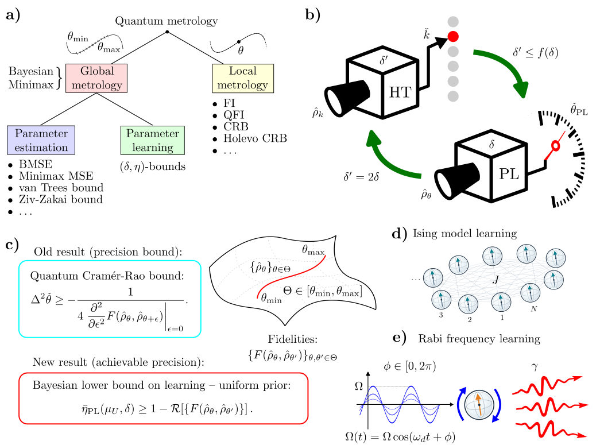
<figcaption class="paper-figure-caption"><b>Fig 1.</b> Figure 1: (a) Taxonomy of quantum metrology illustrating two distinctions: that between local and global metrology, determined by the prior information available about the parameter, and that between estimation and learning, deter- mined by the choice of figure of merit. More details on this taxonomy are presented in Appendix A. (b) An algorithm that solves parameter learning with precision δ can be used to construct a multi-hypothesis-testing algorithm with hypothesis spacing δ′ = 2δ. Conversely, an algorithm that solves multi-hypothesis testing with hypothesis spacing 0 &lt; δ′ ≤f(δ) ≡min{2δ, 0.1/L} can be used to construct a parameter-learning algorithm with precision δ. See Sec. II D for...</figcaption>
</figure>
<figure class="paper-figure-card">

<figcaption class="paper-figure-caption"><b>Fig 2.</b> Figure 2: Representation of the matrix of outcome prob- abilities in Eq. (49). (a) Success probability with toler- ance, as appearing in Eq. (29). (b) Block success proba- bility, with blocks of at most ℓ= a + 1 elements, defined in Eq. (48).</figcaption>
</figure>
<figure class="paper-figure-card">
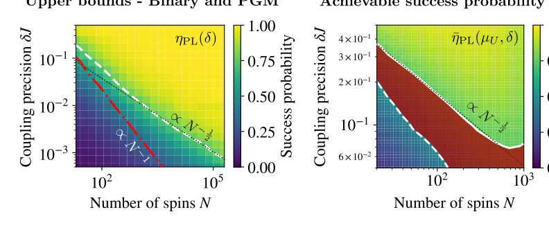
<figcaption class="paper-figure-caption"><b>Fig 3.</b> Figure 3: Success-probability bounds for single-shot learning of the coupling J in Eq. (53), for the input |+⟩⊗N and evolution time t = 0.1/Jmax. (a) The heat map shows the PGM-based multi-hypothesis upper bound in Eq. (44) on the minimax success probability, evaluated from the exact Gram matrix constructed from the overlaps in Eq. (H6). The dashed white curve is its 3/4 contour, and the red dot-dashed curve is the 3/4 contour of the binary hypothesis- testing bound in Eq. (34). Below either curve, the corresponding bound rules out successful minimax learning. The binary contour is compatible with δJ ∝N −1, whereas the PGM-based exclusion contour approximately follows the black dotted δJ ∝N...</figcaption>
</figure>
<figure class="paper-figure-card">
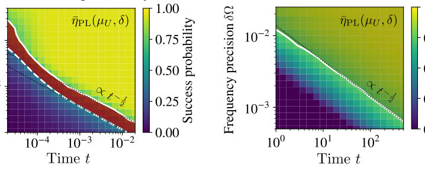
<figcaption class="paper-figure-caption"><b>Fig 4.</b> Figure 4: Uniform-prior Bayesian success-probability bounds for dissipative Rabi-frequency learning as functions of the observation time t and target precision δΩ. In both panels, the heat map shows a PGM-based lower bound (achievable probability), the solid white curve is its 3/4 contour, and the black dotted line indicates the reference scaling δΩ∝t−1/2. (a) Learning with a known drive phase for Ω∈[0, 10γ], for which the joint spin–field output is pure. The lower bound is given by Eq. (46). The dashed white curve is the 3/4 contour of the PGM-based upper bound obtained from Eqs. (27) and (22), using the Gram matrix determined by Eq. (60). The red shaded region between the two contours...</figcaption>
</figure>
<figure class="paper-figure-card">
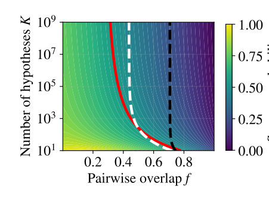
<figcaption class="paper-figure-caption"><b>Fig 5.</b> Figure 6: Exact finite-K Fano upper bound on the suc- cess probability of the learning task in Eq. (F34), as a function of the number of hypotheses K(δ′) and the common off-diagonal fidelity f. The red line is the Fano threshold. The dashed white and black curves are the exact PGM and Montanaro thresholds in Eqs. (F28) and (F31), respectively.</figcaption>
</figure>
</div>

<p><strong>Summary.</strong> This paper develops rigorous global bounds and success-probability guarantees for single-shot quantum parameter learning. By moving beyond local estimation techniques, it establishes new theoretical benchmarks that can certify achievable precision unattainable by classical or standard quantum information methods. This is vital for advancing the field of quantum metrology.</p>
<p><strong>Why it may be interesting.</strong> It provides advanced theoretical tools for quantifying the limits of quantum sensing beyond standard metrics like QFI, which is crucial for designing next-generation quantum sensors in AMO physics.</p>
<details>
<summary>Detailed structure</summary>
<p><strong>Main problem.</strong> The paper tackles two open problems in single-shot quantum parameter learning: constructing global upper bounds on estimation precision and providing rigorous lower bounds on the success probability of parameter recovery.</p>
<p><strong>Main result.</strong> They provide new, practical global bounds and success-probability guarantees that surpass standard Fisher information analysis or binary hypothesis testing limits, allowing for a more accurate characterization of attainable quantum metrology performance.</p>
<p><strong>Method.</strong> The approach moves beyond local estimation by framing the problem in terms of parameter learning theory (PAC-metrology), relating it to multi-hypothesis discrimination and deriving bounds based on pure-state overlaps or pairwise fidelities.</p>
<p><strong>Model / system.</strong> The analysis is general for quantum metrology but applies specifically to a Rabi-frequency-learning example involving a driven qubit coupled to a bosonic environment, and a collective-spin Hamiltonian learning problem (Ising model).</p>
<p><strong>Key observables.</strong> Mean-squared estimation error, success probability, global upper bounds on precision, pairwise fidelities.</p>
<p><strong>Important parameters / regimes.</strong> The unknown parameter $ heta$, the required precision $\delta$, and system parameters like coupling strengths ($\Omega$) or interaction constants ($J$).</p>
<p><strong>Assumptions / limitations.</strong> The work establishes rigorous connections between learning theory and quantum state discrimination, assuming certain regularity conditions for the minimax theorem.</p>
<p><strong>Figures summary.</strong> Figure 1 provides a taxonomy comparing local vs. global metrology; subsequent figures compare the new bounds against standard Cramér–Rao bounds in specific examples like Rabi frequency learning.</p>
<p><strong>Paper structure.</strong> The paper builds from background theory (local vs. global estimation) to deriving main results concerning global upper bounds and success-probability guarantees, followed by detailed applications to Ising models and dissipative/Rabi frequency learning scenarios.</p>
</details>
<details>
<summary>Abstract</summary>
<p>Quantum metrology offers the possibility of quantum enhancements of the precision of various sensing tasks. In this manuscript, we tackle two open problems in the theory of single-shot quantum parameter learning, going beyond the usual setting of local parameter estimation via repeated measurements. The first concerns the construction of global upper bounds on the learning precision. The second concerns rigorous guarantees on the success probability of parameter learning, namely, lower bounds on the probability of learning a parameter with a certain precision, given the constraints on the resources used for the quantum metrology task. We provide rigorous, practical, and global upper bounds and success-probability guarantees for quantum parameter learning. We demonstrate their versatility in a Rabi-frequency-learning example involving a driven qubit coupled to a bosonic environment and a collective-spin Hamiltonian learning problem. Together, the new global bounds and success-probability guarantees allow us to rule out unattainable precision and to certify attainable precision beyond what is possible via standard Fisher-information analysis or binary hypothesis testing bounds. They also allow one to tractably characterize the performance of various learning schemes, without the overhead of an explicit simulation.</p>
</details>
<p><sub><a href="#top">↑ back to top</a></sub></p>

<p><a id="paper-2608.15329"></a></p>
<h3 id="transitions-to-super-radiance-in-ensembles-of-incoherently-pumped-emitters"><a href="http://arxiv.org/abs/2608.15329v1">Transitions to super-radiance in ensembles of incoherently pumped emitters</a></h3>
<p><strong>Authors:</strong> Laszlo Rassaert, Tommaso Roscilde<br>
<strong>Type:</strong> theory · <strong>Category:</strong> statistical mechanics · <strong>PDF:</strong> <a href="https://arxiv.org/pdf/2608.15329v1">https://arxiv.org/pdf/2608.15329v1</a><br>
<strong>Analysis basis:</strong> full PDF text, analyzed in chunks
<strong>Topic relevance:</strong> 🔥 <code>Dicke superradiance</code> <strong>5/5</strong> · 🔥 <code>driven-dissipative phase transition</code> <strong>4/5</strong> · 🔥 <code>superradiant laser</code> <strong>4/5</strong> · <code>Tavis-Cummings &amp; cavity-many-emitter</code> <strong>3/5</strong> · <code>correlated / nonlocal dissipation</code> <strong>3/5</strong> · <code>methods for driven-dissipative</code> <strong>3/5</strong> · <code>non-equilibrium universality</code> <strong>2/5</strong> · <code>Keldysh / 2PI / non-Gaussian methods</code> <strong>1/5</strong> · <code>analog quantum simulation</code> <strong>1/5</strong> · <code>free-space correlated emission</code> <strong>1/5</strong> · <code>quantum measurements</code> <strong>1/5</strong></p>
<div class="figure-strip-hint">↔ Scroll figures horizontally</div>
<div class="paper-figures-scroll">
<figure class="paper-figure-card">
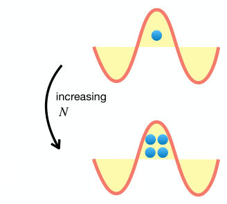
<figcaption class="paper-figure-caption"><b>Fig 1.</b> Figure 1: Coupling schemes of emitters to light considered in this work: (a) fixed den- sity: when increasing the number of emitters, the coupling strength to the common emission mode decreases, so that the collective emission rate decreases as ΓN = Γ/N; (b) fixed coupling: when increasing the number of emitters, the coupling to the com- mon emission mode remains the same, ΓN = Γ.</figcaption>
</figure>
<figure class="paper-figure-card">
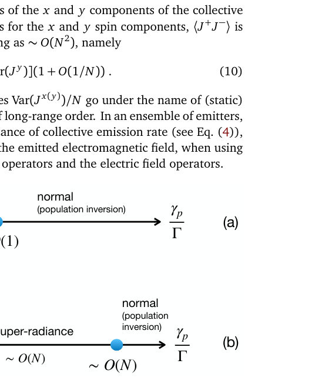
<figcaption class="paper-figure-caption"><b>Fig 2.</b> Figure 2: Steady-state phase diagrams within the two coupling schemes of the emit- ters to the common emission mode: (a) fixed-density scheme; (b) fixed-coupling scheme.</figcaption>
</figure>
<figure class="paper-figure-card">
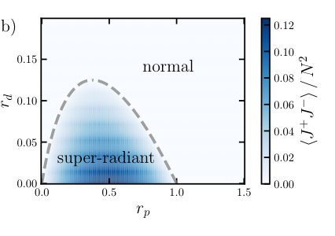
<figcaption class="paper-figure-caption"><b>Fig 3.</b> Figure 3: Steady-state phase diagram in the pumping vs. dephasing plane (a), and in the pumping vs. individual decay plane (b). The phases are characterized by the order parameter 〈J+J−〉/N 2 obtained with the TCE1 approximation. The grey dashed line is the critical line given in Eq. (14)).</figcaption>
</figure>
<figure class="paper-figure-card">
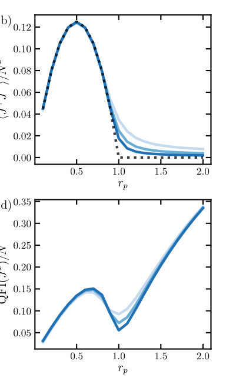
<figcaption class="paper-figure-caption"><b>Fig 4.</b> Figure 4: Steady-state phase transition from super-radiance to normal emission upon increasing the pumping rate rp: (a) 〈Jz〉/N related to the average density of excited emitters; (b) integrated, normalized dipole-dipole correlations 〈J+J−〉/N 2, (c) von- Neumann entropy per emitter S(ρ)/N = −Tr(ρ lnρ)/N and (d) quantum Fisher information density for the operator J x. All solid lines correspond to exact results. The black dashed lines correspond to TCE1 predictions, Eqs. (11) and (15), and are independent of N.</figcaption>
</figure>
<figure class="paper-figure-card">
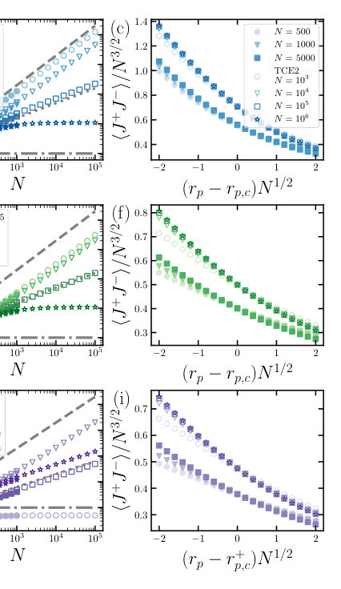
<figcaption class="paper-figure-caption"><b>Fig 5.</b> Figure 5: Exact numerical results, as well as TCE results, for the steady state cor- relations across the super-radiant to normal phase transition. Panels (a,d,g) show the exact integrated correlations for three sizes (N = 250,500,1000, from lighter to darker), and for (a) rφ = 0, rd = 0, (d) rφ ̸= 0, rd = 0, (g) rφ = 0, rd ̸= 0. Black dotted lines are TCE1 predictions, Eqs. (11) and (13). Panels (b,e,h) show the scal- ing of the integrated correlations per emitter 〈J+J−〉/N for different values rp on both sides of the phase transition and at the critical point for (b) rφ = 0, rd = 0 (e) rφ = 0.5, rd = 0 (h) rφ = 0, rd = 0.1. Filled symbols are exact numerical results, whereas empty symbols...</figcaption>
</figure>
</div>

<p><strong>Summary.</strong> The paper rigorously analyzes the super-radiant transition in ensembles of emitters facing environmental noise. By using exact solutions and cumulant expansions, it establishes that collective emission remains robust to dephasing but faces limitations from individual decay rates. This work provides quantitative scaling laws for this non-equilibrium many-body phase relevant for solid-state quantum optics.</p>
<p><strong>Why it may be interesting.</strong> This work provides crucial quantitative insights into non-equilibrium many-body physics, specifically characterizing a distinct dissipative phase transition (super-radiance) in realistic solid-state environments where decoherence is unavoidable.</p>
<details>
<summary>Detailed structure</summary>
<p><strong>Main problem.</strong> The work investigates the conditions under which super-radiance, a collective quantum emission phenomenon, can occur in ensembles of emitters subjected to environmental decoherence mechanisms like dephasing and individual decay.</p>
<p><strong>Main result.</strong> Super-radiance is shown to be fundamentally robust against sizable dephasing rates, particularly when considering fixed coupling regimes; however, individual decay introduces critical size limitations for observing asymptotic scaling.</p>
<p><strong>Method.</strong> The authors employ an exact solution exploiting permutational invariance for small systems and benchmark this against a truncated cumulant expansion approach for larger sizes.</p>
<p><strong>Model / system.</strong> The system models ensembles of identical emitters coupled to a common light mode, described by dynamics governed by a Lindblad master equation incorporating pumping, collective emission, individual decay, and dephasing terms.</p>
<p><strong>Key observables.</strong> Average values of collective spin operators ($\langle J_z 
angle$, $\langle J^+J^- 
angle$), super-radiant emission intensity scaling, and Quantum Fisher Information (QFI).</p>
<p><strong>Important parameters / regimes.</strong> Dephasing rate ($\gamma_\phi$), individual decay rate ($\gamma_d$), system size ($N$), and the coupling scheme (fixed density vs. fixed coupling).</p>
<p><strong>Assumptions / limitations.</strong> The primary assumption is the permutational invariance of the emitters, which allows for simplification into collective spin variables.</p>
<p><strong>Figures summary.</strong> Figures illustrate the scaling of collective emission rates under different coupling schemes and show time evolution trajectories in the Dicke manifold $(J, M)$ plane, alongside the evolution of quantum coherence measures like QFI during super-radiant bursts.</p>
<p><strong>Paper structure.</strong> The paper systematically analyzes the dynamics by first establishing the theoretical framework using master equations, then solving it exactly for small $N$, extending to large $N$ via cumulant expansions, and finally comparing the robustness of super-radiance under different environmental couplings (dephasing vs. decay).</p>
</details>
<details>
<summary>Abstract</summary>
<p>Super-radiance is a striking phenomenon resulting from the collective interaction of emitters with light, and it is fundamentally related to the appearance of long-range correlations between the dipole moments of the emitters. As such, it represents a distinct phase of dissipative many-body systems compared to the case of independent emitters, similarly to how ferromagnetism stands out in magnetic materials in contrast to paramagnetism. In this work we address the conditions under which the transition to super-radiance can occur in ensembles of emitters subject to dephasing and individual decay -- a situation which is particularly relevant to the case of emitters in the solid state. The simplifying assumption of an ensemble of permutationally invariant emitters allows for the efficient solution of both the dissipative dynamics after a pulsed excitation, as well as of the steady state under incoherent pumping. This exact solution allows us to benchmark a truncated cumulant expansion approach, which can give predictions for arbitrarily big system sizes. We show that super-radiance is fundamentally robust to sizable dephasing and non-radiative decay rates, both under a pulsed excitation, as well as under continuous pumping. This robustness is the result of the collective acceleration effect of super-radiant emission with respect to the individual coupling to a local environment. We establish the universal critical scaling laws at the transition between normal radiance and super-radiance; and we show that, in the super-radiant phase, significant finite-size crossovers can be observed before reaching the asymptotic scaling regime. Our results pave the way for future experiments to provide a quantitative characterization of the scaling properties of super-radiance, seen as a distinct non-equilibrium many-body phase in ensembles of incoherently pumped emitters.</p>
</details>
<p><sub><a href="#top">↑ back to top</a></sub></p>

<p><a id="paper-2608.16616"></a></p>
<h3 id="scarred-discrete-time-crystal-in-a-periodically-driven-dimerized-spin-chain"><a href="http://arxiv.org/abs/2608.16616v1">Scarred discrete time crystal in a periodically driven dimerized spin chain</a></h3>
<p><strong>Authors:</strong> Davood Marripour, Saeed S. Jahromi, Jahanfar Abouie<br>
<strong>Type:</strong> theory · <strong>Category:</strong> other · <strong>PDF:</strong> <a href="https://arxiv.org/pdf/2608.16616v1">https://arxiv.org/pdf/2608.16616v1</a><br>
<strong>Analysis basis:</strong> full PDF text, analyzed in chunks
<strong>Topic relevance:</strong> 🔥 <code>scars &amp; prethermalization</code> <strong>5/5</strong> · <code>analog quantum simulation</code> <strong>3/5</strong> · <code>driven-dissipative phase transition</code> <strong>3/5</strong> · <code>methods for driven-dissipative</code> <strong>2/5</strong> · <code>non-equilibrium universality</code> <strong>2/5</strong> · <code>Frenkel-Kontorova</code> <strong>1/5</strong> · <code>Keldysh / 2PI / non-Gaussian methods</code> <strong>1/5</strong> · <code>correlated / nonlocal dissipation</code> <strong>1/5</strong></p>
<div class="figure-strip-hint">↔ Scroll figures horizontally</div>
<div class="paper-figures-scroll">
<figure class="paper-figure-card">
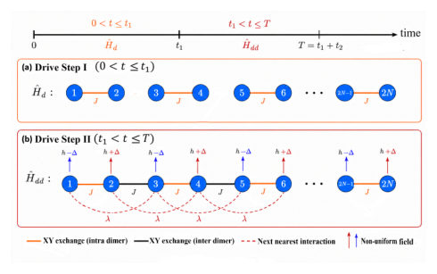
<figcaption class="paper-figure-caption"><b>Fig 1.</b> FIG. 1: Schematic representation of the periodically driven dimerized spin chain. The driving cycle T = t1 + t2 consists of two distinct phases: during t1, the dimers evolve as non- interacting units, while during t2, a dimer-dimer interaction and an external magnetic field are introduced.</figcaption>
</figure>
<figure class="paper-figure-card">
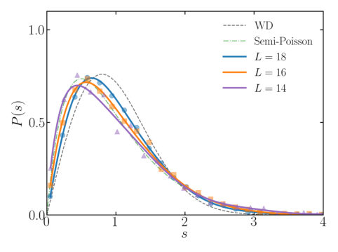
<figcaption class="paper-figure-caption"><b>Fig 2.</b> FIG. 3: Level spacing distribution P(s) for system sizes L = 14, 16, and 18 in the weakly non-ergodic regime. Here, ˜∆= 0.11, ˜J = 0.15, ˜h = 1 and λt2 = 0.9. The green dash-dotted and red dashed curves denote the analytical predictions for semi-Poisson and WD statistics, respectively. The observed finite-size flow indicates that as L increases, the numerical data systematically depart from the semi-Poissonian regime toward the WD distribution, signaling an eventual crossover to thermalization in the thermodynamic limit.</figcaption>
</figure>
<figure class="paper-figure-card">
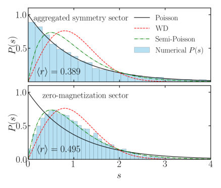
<figcaption class="paper-figure-caption"><b>Fig 3.</b> FIG. 2: (Top): Level spacing distribution P(s) obtained from the aggregated symmetry sectors. The resulting Pois- sonian statistics highlight the necessity of partitioning the global U(1) symmetry to avoid spurious non-ergodic signa- tures. (Bottom): Level spacing distribution P(s) for the driven dimer chain with ˜∆= 0.11, ˜J = 0.15, ˜h = 1 and λt2 = 0.9, and L = 16. The numerical results in the { ˜J, ˜∆} &lt; 1 regime exhibit semi-Poisson statistics, signal- ing constrained dynamics and many-body scars. Theoretical Poisson and WD distributions are shown for comparison.</figcaption>
</figure>
<figure class="paper-figure-card">
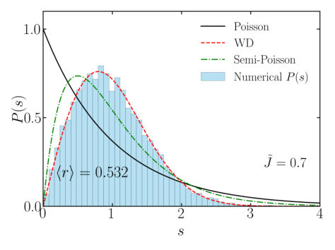
<figcaption class="paper-figure-caption"><b>Fig 4.</b> FIG. 4: Level spacing distribution P(s) for the periodically driven chain of length L = 16, with ˜∆= 0.11, ˜h = 1 and λt2 = 0.9, evaluated at the larger coupling ˜J = 0.7. At this value of ˜J the statistics shift from the semi-Poissonian regime toward the WD distribution, indicating a transition into the fully ergodic thermal phase.</figcaption>
</figure>
<figure class="paper-figure-card">
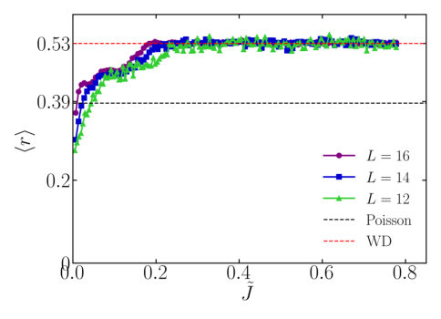
<figcaption class="paper-figure-caption"><b>Fig 5.</b> FIG. 6: Average level-spacing ratio ⟨r⟩versus the coupling ˜J for system sizes L = 12, 14, and 16, with ˜∆= 0.11 and λt2 = 0.9. The black and red dashed lines denote the theoretical Poisson (≈0.39) and WD (≈0.53) limits, respectively. The increasing sharpness of the crossover with L is a signature of the transition from the constrained regime to a fully ergodic thermal phase.</figcaption>
</figure>
</div>

<p><strong>Summary.</strong> The paper investigates Scarred Discrete Time Crystals (SDTCs) in a dimerized spin chain under periodic driving. It demonstrates that the system enters a weakly ergodic regime characterized by quantum many-body scars, evidenced by semi-Poisson level statistics and subharmonic oscillations. The authors conclude that this SDTC is a long-lived metastable state whose stability can be mapped against the onset of full thermalization.</p>
<p><strong>Why it may be interesting.</strong> This work provides a detailed theoretical framework for understanding how structured quantum dynamics (scars) can resist thermalization in clean, periodically driven systems, which is highly relevant to Floquet engineering applications in AMO physics.</p>
<details>
<summary>Detailed structure</summary>
<p><strong>Main problem.</strong> The study investigates the emergence of a Scarred Discrete Time Crystal (SDTC) phase in a periodically driven dimerized spin chain, specifically addressing how weak ergodicity breaking occurs relative to full thermalization.</p>
<p><strong>Main result.</strong> The system exhibits QMBS leading to robust subharmonic oscillations, confirming SDTC behavior; this regime is characterized as a long-lived metastable dynamical state rather than a stable thermodynamic phase.</p>
<p><strong>Method.</strong> Analysis involves calculating Floquet level statistics (comparing semi-Poisson vs. Wigner-Dyson), measuring entanglement entropy, and performing finite-size scaling on the time-crystalline lifetime.</p>
<p><strong>Model / system.</strong> The model is a periodically driven antiferromagnetic dimerized spin chain governed by a two-step Floquet cycle ($U = e^{-i H_{dd}t_2}e^{-i H_d t_1}$). The Hamiltonian includes XY coupling within dimers and inter-dimer interactions ($\lambda, h, \Delta$).</p>
<p><strong>Key observables.</strong> Semi-Poisson level statistics (signature of QMBS), subharmonic oscillations with period doubling (SDTC signature), Wigner-Dyson statistics (thermal limit), and time-crystalline lifetime.</p>
<p><strong>Important parameters / regimes.</strong> The primary control parameters are the dimer coupling ($J$), inter-dimer interaction ($\lambda$), and magnetic fields ($h, \Delta$). The crossover is driven by varying $    ilde{J}$ relative to a critical value.</p>
<p><strong>Assumptions / limitations.</strong> The analysis focuses on the zero-magnetization sector and treats the SDTC as a long-lived metastable regime whose lifetime is expected to saturate due to hybridization with the thermal continuum at large sizes.</p>
<p><strong>Figures summary.</strong> Figures illustrate the crossover of spectral statistics from semi-Poisson (small $ ilde{J}$, scarred) towards Wigner-Dyson (large $    ilde{J}$, thermalized), and show finite-size scaling confirming this transition flow.</p>
<p><strong>Paper structure.</strong> The paper establishes the physical model, details diagnostic tools like level spacing analysis, presents results mapping the crossover between non-ergodic/scarred dynamics and ergodic/thermal dynamics, and concludes by framing the SDTC as a metastable phenomenon.</p>
</details>
<details>
<summary>Abstract</summary>
<p>We investigate the emergence of a scarred discrete time crystal (SDTC) phase in a periodically driven dimerized spin chain. While generic interacting Floquet systems are expected to thermalize according to the eigenstate thermalization hypothesis (ETH), we demonstrate that this system hosts quantum many-body scars (QMBS) that induce a regime of weak ergodicity breaking. Through an analysis of Floquet level statistics, entanglement entropy, and eigenstate fidelity, we identify a manifold of low-entanglement states characterized by semi-Poisson statistics embedded within an otherwise thermal spectrum. These scarred states support robust subharmonic oscillations with period doubling, signaling the spontaneous breaking of discrete time-translation symmetry. We show that the SDTC response is robust against a variety of initial state configurations, demonstrating its stability beyond fine-tuned conditions. A finite-size scaling analysis reveals that the time-crystalline lifetime grows with system size within the range accessible to our exact-diagonalization calculations. However, drawing on the general phenomenology of approximate many-body scars, we expect that hybridization between Floquet scars and the thermal continuum will eventually curtail this growth, causing the lifetime to saturate at system sizes beyond our current numerical reach. This characterizes the SDTC as a long-lived metastable dynamical regime rather than a strictly stable thermodynamic phase, providing a comprehensive framework for understanding the interplay between periodic driving and constrained many-body dynamics in disorder-free systems.</p>
</details>
<p><sub><a href="#top">↑ back to top</a></sub></p>

<p><a id="paper-2608.15017"></a></p>
<h3 id="quantum-many-body-scars-magnon-pair-condensation-and-hilbert-space-fragmentation-in-an-anisotropic-heisenberg-model"><a href="http://arxiv.org/abs/2608.15017v1">Quantum Many-Body Scars, Magnon-Pair Condensation, and Hilbert Space Fragmentation in an Anisotropic Heisenberg Model</a></h3>
<p><strong>Authors:</strong> J. Y. Liu-Sun, Z. Song<br>
<strong>Type:</strong> theory · <strong>Category:</strong> other · <strong>PDF:</strong> <a href="https://arxiv.org/pdf/2608.15017v1">https://arxiv.org/pdf/2608.15017v1</a><br>
<strong>Analysis basis:</strong> full PDF text, analyzed in chunks
<strong>Topic relevance:</strong> 🔥 <code>scars &amp; prethermalization</code> <strong>5/5</strong> · <code>analog quantum simulation</code> <strong>3/5</strong> · <code>non-equilibrium universality</code> <strong>1/5</strong></p>
<div class="figure-strip-hint">↔ Scroll figures horizontally</div>
<div class="paper-figures-scroll">
<figure class="paper-figure-card">
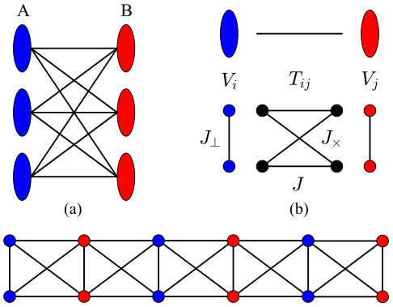
<figcaption class="paper-figure-caption"><b>Fig 1.</b> FIG. 1. Schematic illustration of the anisotropic Heisenberg model on a lattice composed of two identical sublattices. (a) Generic bipartite lattice geometry. The intra-dimer coupling Vj acts on the two spins within each dimer, while the inter- dimer coupling Tij connects dimers belonging to different sub- lattices A and B. (b) Local dimer structure with anisotropic couplings J⊥and Jz, given in Eqs. (2). (c) Spin-ladder as an example of the model, given in Eqs. (6 ), where the inter-rung couplings are XY-type, denoted by J and J×, respectively.</figcaption>
</figure>
<figure class="paper-figure-card">
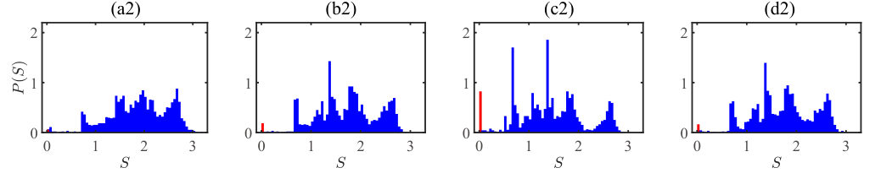
<figcaption class="paper-figure-caption"><b>Fig 2.</b> FIG. 2. Plots of bipartite entanglement entropy of all eigenstates in the sector with PN j=1 sz j = 4 and the corresponding probability distribution for the ladder system [given by Eq. (6)] with N = 8, J⊥= 5, and Jz = J = 1. Panels (a1)–(d1) show the entanglement entropy S(E) as a function of eigenenergy, while panels (a2)–(d2) display the corresponding probability distribution P(S). From left to right, the inter-sublattice coupling J× is tuned across the resonance condition J× = J. The plots with S ≈0 are indexed by red. A pronounced accumulation of eigenstates with nearly vanishing entanglement entropy emerges at resonance, signaling strong Hilbert-space fragmentation. Away from...</figcaption>
</figure>
</div>

<p><strong>Summary.</strong> This work analyzes an anisotropic Heisenberg model to demonstrate the simultaneous occurrence of three complex quantum phenomena: quantum many-body scars, magnon-pair condensation with long-range order, and Hilbert space fragmentation. By utilizing the RSGA, the authors establish an exactly solvable framework that connects these concepts through a resonant mapping to a mixed spin system.</p>
<p><strong>Why it may be interesting.</strong> The paper provides a concrete, exactly solvable platform linking several advanced topics—scarring, condensation, and fragmentation—which are crucial for understanding non-equilibrium dynamics in quantum many-body systems relevant to AMO physics.</p>
<details>
<summary>Detailed structure</summary>
<p><strong>Main problem.</strong> The study investigates the simultaneous existence of quantum many-body scars (QMBS), magnon-pair condensation, and emergent Hilbert space fragmentation in a unified theoretical framework.</p>
<p><strong>Main result.</strong> The authors establish an exactly solvable model where these three distinct phenomena coexist: scar states are shown to be magnon-pair condensates exhibiting off-diagonal long-range order, while resonance conditions induce kinetic constraints leading to HSF.</p>
<p><strong>Method.</strong> The research employs the Restricted Spectrum Generating Algebra (RSGA) to generate exact eigenstates and analyzes entanglement entropy scaling laws for diagnostics.</p>
<p><strong>Model / system.</strong> The system is a spin-1/2 anisotropic Heisenberg model defined on two coupled bipartite sublattices. Under specific resonance conditions, it maps exactly onto a mixed spin-1 and spin-0 XY model.</p>
<p><strong>Key observables.</strong> Subextensive entanglement entropy (subvolume law), Off-Diagonal Long-Range Order (ODLRO), and the presence of dynamically isolated subspaces signaling Hilbert Space Fragmentation (HSF).</p>
<p><strong>Important parameters / regimes.</strong> The inter-sublattice coupling strength ($J_	imes$) relative to other couplings, particularly at the resonance point where $J_	imes = J$.</p>
<p><strong>Assumptions / limitations.</strong> The analysis relies on using the RSGA to construct exact eigenstates and assumes the applicability of mapping techniques under resonant conditions.</p>
<p><strong>Figures summary.</strong> Figure 2 illustrates how entanglement entropy $S(E)$ and its probability distribution $P(S)$ accumulate near zero at resonance, visually confirming strong Hilbert-space fragmentation in a ladder system.</p>
<p><strong>Paper structure.</strong> The paper introduces the general anisotropic Heisenberg model, uses RSGA to find scar states characterized by subextensive entanglement and ODLRO. It then analyzes the resonant point where the model simplifies to an XY type, demonstrating how local spin conservation leads directly to HSF alongside the established QMBS features.</p>
</details>
<details>
<summary>Abstract</summary>
<p>We investigate a spin-$1/2$ anisotropic Heisenberg model on a lattice consisting of two identical bipartite sublattices. A family of exact eigenstates generated by the restricted spectrum generating algebra (RSGA) constitutes quantum many-body scar states, characterized by subextensive entanglement entropy and supporting. These scar states are magnon-pair condensates exhibiting off-diagonal long-range order (ODLRO). At the resonance point of the inter-sublattice interaction, the model exactly maps onto a mixed spin-$1$ and spin-$0$ XY model on a bipartite lattice, which decomposes into independent sub-Hamiltonians labeled by all possible spin configurations. Each spin-$0$ particle is dynamically isolated from its neighbors and acts as a kinetic constraint, giving rise to emergent Hilbert space fragmentation (HSF). Our work establishes an exactly solvable platform in which quantum many-body scars, magnon-pair condensation exhibiting off-diagonal long-range order, and Hilbert space fragmentation naturally coexist.</p>
</details>
<p><sub><a href="#top">↑ back to top</a></sub></p>

<p><a id="paper-2608.16608"></a></p>
<h3 id="discretisation-of-quantum-feedback-networks-for-implementation-on-a-quantum-computer"><a href="http://arxiv.org/abs/2608.16608v1">Discretisation of quantum feedback networks for implementation on a quantum computer</a></h3>
<p><strong>Authors:</strong> Luc Bouten, John Gough<br>
<strong>Type:</strong> theory · <strong>Category:</strong> quantum information and computing · <strong>PDF:</strong> <a href="https://arxiv.org/pdf/2608.16608v1">https://arxiv.org/pdf/2608.16608v1</a><br>
<strong>Analysis basis:</strong> full PDF text, analyzed in chunks
<strong>Topic relevance:</strong> 🔥 <code>quantum measurements</code> <strong>4/5</strong> · <code>Tavis-Cummings &amp; cavity-many-emitter</code> <strong>3/5</strong> · <code>driven-dissipative phase transition</code> <strong>3/5</strong> · <code>methods for driven-dissipative</code> <strong>3/5</strong> · <code>analog quantum simulation</code> <strong>2/5</strong> · <code>correlated / nonlocal dissipation</code> <strong>2/5</strong> · <code>non-equilibrium universality</code> <strong>2/5</strong> · <code>Dicke superradiance</code> <strong>1/5</strong> · <code>Keldysh / 2PI / non-Gaussian methods</code> <strong>1/5</strong></p>
<div class="figure-strip-hint">↔ Scroll figures horizontally</div>
<div class="paper-figures-scroll">
<figure class="paper-figure-card">
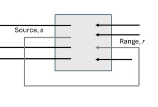
<figcaption class="paper-figure-caption"><b>Fig 1.</b> Figure 1: On the left, we have a multiple-input multiple-output system. There are the same number m of inputs as outputs. An SLH network is then formed by feeding some of the outputs back in as inputs. Each connection reduces the total number of external inputs (and outputs) by 1. We take s to denote the label of an output (source) and r to denote the label of an input (range).</figcaption>
</figure>
</div>

<p><strong>Summary.</strong> This paper presents a rigorous mathematical framework for discretizing Quantum Feedback Networks, which are fundamental tools in quantum optics. By proving strong convergence of discrete approximations to the continuous evolution governed by QSDEs, it provides a pathway to simulate complex quantum optical systems on actual quantum computers.</p>
<p><strong>Why it may be interesting.</strong> This work provides the necessary theoretical guarantees (strong convergence) to translate complex quantum optical models into algorithms executable on near-term quantum hardware.</p>
<details>
<summary>Detailed structure</summary>
<p><strong>Main problem.</strong> The primary goal is developing a rigorous method to discretize Quantum Feedback Networks (SLH-networks) so that their time evolution can be accurately simulated on a quantum computer.</p>
<p><strong>Main result.</strong> The authors establish strong convergence, uniformly on compact time intervals, showing that the discrete approximation converges to the continuous SLH-network as the discretization mesh approaches zero.</p>
<p><strong>Method.</strong> The work utilizes quantum stochastic calculus (Hudson-Parthasarathy) and establishes convergence by relating the discrete evolution operator to the continuous unitary co-cycle governing the network dynamics.</p>
<p><strong>Model / system.</strong> The model is based on Quantum Feedback Networks, which are described by coefficients $(S, L, H)$ derived from a quantum stochastic differential equation (QSDE). These networks are relevant for modeling complex systems in quantum optics, such as cavity QED.</p>
<p><strong>Key observables.</strong> The network time evolution operator $\hat{U}_t$, and the convergence of discrete approximations $M_k(l)$ to this continuous limit.</p>
<p><strong>Important parameters / regimes.</strong> The discretization mesh size ($\sigma$ or related parameters), and the structure defined by the SLH-triple $(S, L, H)$.</p>
<p><strong>Assumptions / limitations.</strong> Convergence theorems rely on assumptions regarding the boundedness of coefficients in the QSDE and the properties of cocycles.</p>
<p><strong>Paper structure.</strong> The paper builds from defining the continuous dynamics via QSDEs to constructing a discrete approximation using recursive generators, culminating in convergence proofs based on established theorems for semigroups.</p>
</details>
<details>
<summary>Abstract</summary>
<p>Quantum Feedback Network Theory (also known colloquially as the SLH-framework) is a powerful tool for modeling systems in quantum optics. This paper describes a method for discretising SLH-networks such that they can be implemented on a quantum computer. Building on a discretisation theorem for quantum stochastic differential equations, we establish strong convergence, uniformly on compact time intervals, of the discretised system to the continuous SLH-network as the discretisation mesh goes to zero.</p>
</details>
<p><sub><a href="#top">↑ back to top</a></sub></p>

<p><a id="paper-2608.15534"></a></p>
<h3 id="collectively-enhanced-universal-photon-blockade"><a href="http://arxiv.org/abs/2608.15534v1">Collectively Enhanced Universal Photon Blockade</a></h3>
<p><strong>Authors:</strong> Guohao Chang, Ahmad Abliz<br>
<strong>Type:</strong> theory · <strong>Category:</strong> other · <strong>PDF:</strong> <a href="https://arxiv.org/pdf/2608.15534v1">https://arxiv.org/pdf/2608.15534v1</a><br>
<strong>Analysis basis:</strong> full PDF text, analyzed in chunks
<strong>Topic relevance:</strong> 🔥 <code>Tavis-Cummings &amp; cavity-many-emitter</code> <strong>4/5</strong> · <code>driven-dissipative phase transition</code> <strong>3/5</strong> · <code>methods for driven-dissipative</code> <strong>3/5</strong> · <code>correlated / nonlocal dissipation</code> <strong>2/5</strong> · <code>non-equilibrium universality</code> <strong>2/5</strong> · <code>Dicke superradiance</code> <strong>1/5</strong> · <code>Keldysh / 2PI / non-Gaussian methods</code> <strong>1/5</strong> · <code>analog quantum simulation</code> <strong>1/5</strong> · <code>quantum measurements</code> <strong>1/5</strong> · <code>superradiant laser</code> <strong>1/5</strong></p>
<div class="figure-strip-hint">↔ Scroll figures horizontally</div>
<div class="paper-figures-scroll">
<figure class="paper-figure-card">
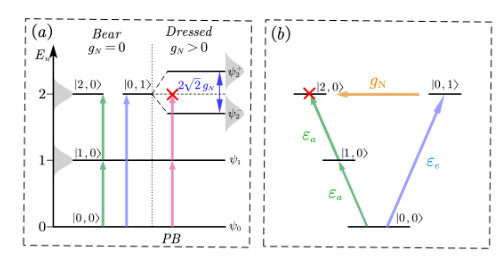
<figcaption class="paper-figure-caption"><b>Fig 1.</b> FIG. 1. Energy-level structure and interference mech- anism. (a) Conventional photon blockade (CPB) produced by the single-photon resonance and the anharmonic spectrum of the two-photon Tavis–Cummings model. (b) Two excita- tion pathways leading to the two-photon state |2, 0⟩and their destructive interference.</figcaption>
</figure>
<figure class="paper-figure-card">
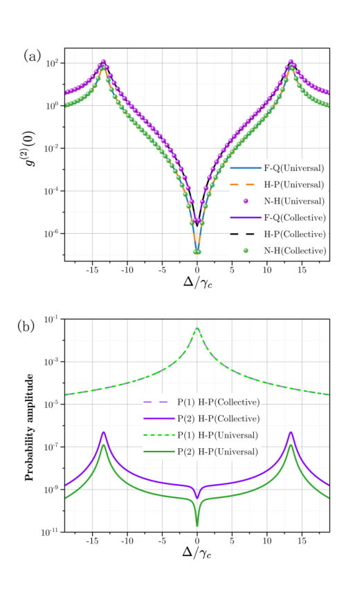
<figcaption class="paper-figure-caption"><b>Fig 2.</b> FIG. 2. Comparison between collectively enhanced universal photon blockade (universal PB) and purely collective photon blockade (purely collective PB). (a) Equal-time second-order correlation function g(2)(0) as a func- tion of the detuning ∆c/γc. Results from the Holstein– Primakoff approximation, full-quantum simulations, and the non-Hermitian probability-amplitude method agree closely. (b) Single- and two-photon populations as functions of detun- ing. The parameters are g/γc = 6, εa/γc = 0.1, εe = −ε2 a/gN, γc = γe, and N = 10.</figcaption>
</figure>
<figure class="paper-figure-card">
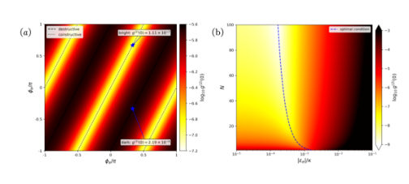
<figcaption class="paper-figure-caption"><b>Fig 3.</b> FIG. 3. Control of universal photon blockade (univer- sal PB) through the drive phases and amplitudes. (a) Two-dimensional distribution of g(2)(0) as a function of the drive phases ϕa and ϕe. The dashed and dotted lines indicate the two phase-matching conditions shown in the panel. (b) g(2)(0) as a function of the emitter number N and emitter- drive strength |εe|. The blue dashed curve marks the optimal condition |εe| = ε2 a/gN. The fixed parameters are ∆c = 0, g = 6γc, εa = 0.1γc, and γe = γc.</figcaption>
</figure>
<figure class="paper-figure-card">
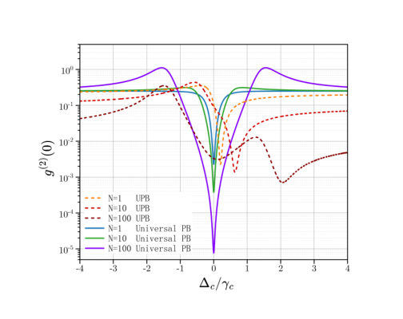
<figcaption class="paper-figure-caption"><b>Fig 4.</b> FIG. 4. Comparison between universal photon block- ade (universal PB) and unconventional photon block- ade (UPB). Within the Holstein–Primakoff approximation, g(2)(0) is plotted as a function of ∆c/γc for universal PB (solid curves) and UPB (dashed curves), with N = 1, 10, and 100. The fixed parameters are g/γc = 0.2, εa/γc = 0.01, γe = γc, and ϕa = 0. For universal PB, εe = −ε2 a/gN and ϕe = 0, with the optimum occurring at ∆c = 0. For UPB, n = 1, and the drive amplitude and phase are determined numerically from the condition C20 = 0.</figcaption>
</figure>
<figure class="paper-figure-card">
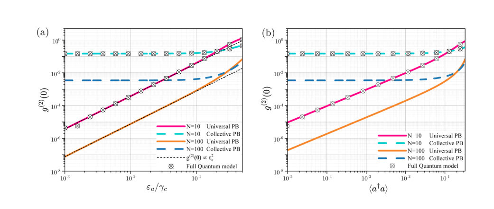
<figcaption class="paper-figure-caption"><b>Fig 5.</b> FIG. 5. Control of photon blockade by the drive strength. (a) g(2)(0) as a function of εa/γc. The black dashed line indicates the reference scaling g(2)(0) ∝ε2 a. (b) g(2)(0) as a function of the mean intracavity photon number ⟨a†a⟩, illustrating the purity–brightness trade-off. Solid and dashed curves correspond to N = 100 and N = 10, respectively, and the symbols are full-quantum simulation results. The fixed parameters are g/γc = 0.2 and γe = γc, with the drives satisfying the optimal interference condition.</figcaption>
</figure>
</div>

<p><strong>Summary.</strong> The paper proposes a novel 'collectively enhanced universal photon blockade' scheme for generating single photons in multi-emitter cavity QED. By combining two-photon resonance effects with destructive interference pathways, the scheme achieves strong antibunching ($g^{(2)}(0) \propto N^{-2}$) while preserving high single-photon brightness. The theoretical analysis uses advanced master equation techniques to establish a scalable and tunable route for quantum light sources.</p>
<p><strong>Why it may be interesting.</strong> This work provides a detailed theoretical framework for controlling photon emission purity in complex, driven open quantum systems, directly relevant to cavity QED research.</p>
<details>
<summary>Detailed structure</summary>
<p><strong>Main problem.</strong> The goal is to develop a scalable method for generating bright, high-purity single photons using multi-emitter cavity quantum electrodynamics (cavity QED) systems.</p>
<p><strong>Main result.</strong> A proposed 'collectively enhanced universal photon blockade' scheme achieves superior antibunching scaling ($g^{(2)}(0) \propto N^{-2}$) compared to conventional methods, while maintaining high single-photon brightness.</p>
<p><strong>Method.</strong> The analysis employs full-quantum master equation simulations, the Holstein–Primakoff approximation, and non-Hermitian probability-amplitude techniques for cross-validation.</p>
<p><strong>Model / system.</strong> The system is a two-photon Tavis–Cummings model involving $N$ identical emitters coupled to a single optical cavity mode. The dynamics are governed by a Lindblad master equation incorporating coherent drives on both the cavity and emitter ensembles.</p>
<p><strong>Key observables.</strong> Second-order correlation function, $g^{(2)}(0)$, which quantifies photon antibunching; single-photon population ($P_1$).</p>
<p><strong>Important parameters / regimes.</strong> Emitter number ($N$), detunings ($\Delta_c$, $\Delta_e$), and drive strengths ($\epsilon_a$, $\epsilon_e$); the weak-drive regime is particularly important for scaling analysis.</p>
<p><strong>Assumptions / limitations.</strong> The analysis relies on exploiting permutation symmetry to simplify Hilbert space calculations, and in some derivations, truncating the wavefunction up to a certain excitation number ($N_{ex} \le 3$).</p>
<p><strong>Figures summary.</strong> Figures compare $g^{(2)}(0)$ for universal PB versus purely collective blockade schemes, demonstrating phase control over antibunching and showing scaling behavior with emitter number $N$.</p>
<p><strong>Paper structure.</strong> The paper establishes the physical model using the Tavis-Cummings Hamiltonian, derives dynamics via the master equation, compares the proposed universal blockade mechanism against existing ones (CPB/UPB), analyzes the collective scaling ($N^{-2}$ vs. detuning shift), and details the weak-drive regime dependence ($\propto \epsilon_a^2$).</p>
</details>
<details>
<summary>Abstract</summary>
<p>High-purity and bright single-photon sources are important for quantum information processing and precision measurement. We propose a collectively enhanced universal photon-blockade scheme in a multi-emitter two-photon Tavis--Cummings system. Independent coherent drives of the cavity and collective emitter enable destructive interference between two-photon excitation pathways, while collective coupling supplies level anharmonicity. Full-quantum master-equation simulations, the Holstein--Primakoff approximation, and a non-Hermitian probability-amplitude analysis yield the optimal conditions: cavity resonance together with phase and amplitude matching. Compared with a purely collective blockade, the proposed scheme lowers \(g^{(2)}(0)\), and essentially preserves the single-photon population. As the emitter number \(N\) increases, the optimal point remains at \(Δ_c=0\), while the minimum correlation follows \(g_{\min}^{(2)}(0)\propto N^{-2}\). By contrast, unconventional photon blockade shifts away from resonance as \(N\) increases, limiting its purity improvement and brightness. In the weak-drive regime, universal blockade obeys \(g^{(2)}(0)\propto\varepsilon_a^2\), owing to a higher-order bypass through the three-excitation manifold. The drive strength therefore provides an additional purity--brightness control, although the interference mechanism makes the scheme more sensitive to dissipation-rate mismatch. Our results establish a scalable route to bright, high-purity, and tunable single-photon emission in multi-emitter cavity-QED systems.</p>
</details>
<p><sub><a href="#top">↑ back to top</a></sub></p>

<p><a id="paper-2608.15604"></a></p>
<h3 id="nonlinear-landau-zener-tunneling-with-heat-bath-colored-noise"><a href="http://arxiv.org/abs/2608.15604v1">Nonlinear Landau-Zener Tunneling with Heat-Bath Colored Noise</a></h3>
<p><strong>Authors:</strong> Yi Cao, Jie Liu<br>
<strong>Type:</strong> theory · <strong>Category:</strong> other · <strong>PDF:</strong> <a href="https://arxiv.org/pdf/2608.15604v1">https://arxiv.org/pdf/2608.15604v1</a><br>
<strong>Analysis basis:</strong> full PDF text, analyzed in chunks
<strong>Topic relevance:</strong> 🔥 <code>methods for driven-dissipative</code> <strong>4/5</strong> · <code>Keldysh / 2PI / non-Gaussian methods</code> <strong>3/5</strong> · <code>analog quantum simulation</code> <strong>3/5</strong> · <code>driven-dissipative phase transition</code> <strong>3/5</strong> · <code>correlated / nonlocal dissipation</code> <strong>2/5</strong> · <code>quantum measurements</code> <strong>2/5</strong> · <code>Tavis-Cummings &amp; cavity-many-emitter</code> <strong>1/5</strong> · <code>non-equilibrium universality</code> <strong>1/5</strong></p>
<div class="figure-strip-hint">↔ Scroll figures horizontally</div>
<div class="paper-figures-scroll">
<figure class="paper-figure-card">
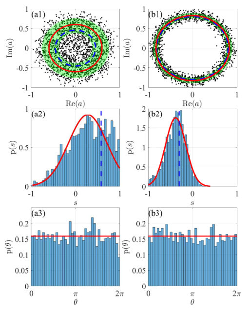
<figcaption class="paper-figure-caption"><b>Fig 1.</b> FIG. 1. Long-time ensemble statistics of the probability am- plitude a, population difference s, and relative phase θ in the linear [panels (a1)–(a3), c = 0] and nonlinear [panels (b1)– (b3), c = 5] systems. (a1, b1) Black dots show the long-time values of a for the individual noise realizations in the complex- a plane; the red solid line and shaded band indicate the en- semble mean and its statistical fluctuations, respectively. (a2, b2) Probability densities of s, with red solid curves denoting Gaussian fits. (a3, b3) Probability densities of θ, with red solid curves denoting the uniform distribution with ampli- tude 1/(2π). Blue solid lines in (a1, b1) and (a2, b2) show the noiseless...</figcaption>
</figure>
<figure class="paper-figure-card">
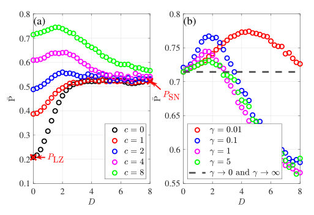
<figcaption class="paper-figure-caption"><b>Fig 2.</b> FIG. 2. Ensemble-averaged tunneling probability ¯P as a func- tion of D for α = 1. (a) We choose a typical correlation time parameter γ = 5 and show nonmonotonic LZ tunneling prob- ability vs. D when c ̸= 0; (b) We set the nonlinear parameter c = 8 and show the correlation time dependence of the tun- neling probability peaks. When γ →0 and γ →∞, the tunneling probabilities turn to be independent of the noise and the tunneling peaks completely disappear.</figcaption>
</figure>
<figure class="paper-figure-card">
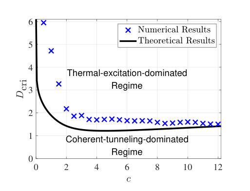
<figcaption class="paper-figure-caption"><b>Fig 3.</b> FIG. 3. The critical noise amplitudes Dcri delineate the boundary between the coherent-quantum-tunneling- dominated and thermal-excitation-dominated regimes of non- linear LZ tunneling. The black solid line represents the theo- retical prediction, and the blue markers denote the numerical results. Here, we choose the typical parameters α = 1 and γ = 5.</figcaption>
</figure>
</div>

<p><strong>Summary.</strong> This paper analyzes nonlinear Landau-Zener tunneling when subjected to heat-bath induced colored noise. It demonstrates that the system's tunneling probability does not simply increase with noise but instead shows a nonmonotonic dependence, peaking at an intermediate noise level due to nonlinearity. The findings clarify this mechanism and distinguish it from other noise-induced phenomena.</p>
<p><strong>Why it may be interesting.</strong> This work is highly relevant as it tackles open quantum systems dynamics (LZ tunneling) under realistic colored noise sources, providing a detailed understanding of how nonlinearity fundamentally alters thermal excitation mechanisms compared to standard linear models.</p>
<details>
<summary>Detailed structure</summary>
<p><strong>Main problem.</strong> The study investigates how colored noise originating from a heat bath affects nonlinear Landau-Zener (LZ) tunneling dynamics.</p>
<p><strong>Main result.</strong> Unlike the linear case where tunneling increases monotonically with noise, nonlinearity causes the tunneling probability to exhibit nonmonotonic behavior: it peaks at a finite noise amplitude before decreasing.</p>
<p><strong>Method.</strong> The analysis employs numerical simulations of the stochastic Schrödinger equation and utilizes the Wiener-Hermite expansion for analytical elucidation.</p>
<p><strong>Model / system.</strong> The model is a nonlinear LZ system coupled to a bosonic heat bath, applicable to systems like BECs or Kerr nonlinear optical waveguides. The dynamics are governed by an effective stochastic Hamiltonian derived from the coupling to the bath.</p>
<p><strong>Key observables.</strong> Ensemble-averaged tunneling probability ($ar{P}$), which depends on noise amplitude and nonlinearity strength.</p>
<p><strong>Important parameters / regimes.</strong> Noise amplitude ($D$), nonlinear parameter ($c$), noise correlation time ($\gamma$), and sweep rate ($\alpha$).</p>
<p><strong>Assumptions / limitations.</strong> The analysis relies on the Markovian approximation for the bath coupling and uses approximations like moment-closure or specific limits (weak/strong noise).</p>
<p><strong>Figures summary.</strong> Figures illustrate the nonmonotonic dependence of $ar{P}$ vs. $D$ for nonlinear systems, contrasting it with the monotonic behavior of linear systems.</p>
<p><strong>Paper structure.</strong> The paper establishes the model Hamiltonian and dynamics under colored noise, uses numerical simulations to observe nonmonotonicity, and employs analytical tools like the Wiener-Hermite expansion to explain the underlying physical mechanism distinguishing this from stochastic resonance.</p>
</details>
<details>
<summary>Abstract</summary>
<p>In this work, we investigate the influence of colored noise originating from a heat bath on nonlinear Landau-Zener (LZ) tunneling. The nonlinearity might arise intrinsically from many-body mean-field atomic self-interactions or Kerr nonlinearities in optical systems. Contrary to the well-established picture of thermally enhanced quantum tunneling within the linear LZ paradigm, ensemble statistics of our numerical simulations demonstrate that nonlinearity can give rise to thermally suppressed LZ tunneling: the tunneling probability of the nonlinear LZ system decreases as the amplitude of the colored noise increases beyond a critical value. Analytically, the Wiener-Hermite expansion facilitates elucidation of the intrinsic mechanism accounting for the nonmonotonic dependence of tunneling probability on noise amplitude. We compare these behaviors with stochastic resonance responses and clarify that the two phenomena stem from distinct physical mechanisms. In addition, we obtain approximate solutions in the weak- and strong-noise limits and discuss the implications of our theory.</p>
</details>
<p><sub><a href="#top">↑ back to top</a></sub></p>

<p><a id="paper-2608.16631"></a></p>
<h3 id="quench-spectroscopy-for-two-dimensional-spin-models-with-power-law-interactions"><a href="http://arxiv.org/abs/2608.16631v1">Quench Spectroscopy for Two-Dimensional Spin Models with Power-Law Interactions</a></h3>
<p><strong>Authors:</strong> Katharina Brechtelsbauer, Hans Peter Büchler<br>
<strong>Type:</strong> theory · <strong>Category:</strong> statistical mechanics · <strong>PDF:</strong> <a href="https://arxiv.org/pdf/2608.16631v1">https://arxiv.org/pdf/2608.16631v1</a><br>
<strong>Analysis basis:</strong> full PDF text, analyzed in chunks
<strong>Topic relevance:</strong> 🔥 <code>analog quantum simulation</code> <strong>4/5</strong> · 🔥 <code>non-equilibrium universality</code> <strong>4/5</strong> · <code>Keldysh / 2PI / non-Gaussian methods</code> <strong>2/5</strong> · <code>Rydberg arrays</code> <strong>2/5</strong> · <code>driven-dissipative phase transition</code> <strong>2/5</strong> · <code>methods for driven-dissipative</code> <strong>2/5</strong> · <code>correlated / nonlocal dissipation</code> <strong>1/5</strong> · <code>scars &amp; prethermalization</code> <strong>1/5</strong></p>
<div class="figure-strip-hint">↔ Scroll figures horizontally</div>
<div class="paper-figures-scroll">
<figure class="paper-figure-card">
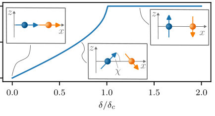
<figcaption class="paper-figure-caption"><b>Fig 1.</b> Figure 1. Illustration of the model (panel (a)) and the spin expectation values of the variational mean-field states (panel (b)). In this paper we derive how the mean-field states in (b) evolve under the model in (a). (a) We consider spin-1/2 particles on a 2-dimensional square lattice with lattice constant a, that interact via power-law exchange interaction. The spins are exposed to a staggered magnetic field with strength δ perpendicular to the lattice. The different colors label the sign of the magnetic field. (b) For the quench dynamics we analyze the time-evolution of mean-field states. These states are simple product states that minimize the energy expectation value. As variational...</figcaption>
</figure>
<figure class="paper-figure-card">
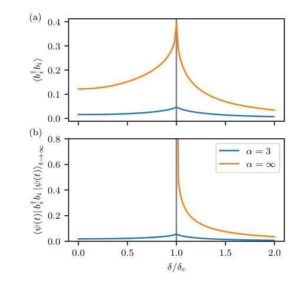
<figcaption class="paper-figure-caption"><b>Fig 2.</b> Figure 2. Numerical results for the expressions in Eq. (7) and Eq. (8). Panel (a) shows the number of Holstein-Primakoff (HP) bosons in the ground state and panel (b) the number of HP-bosons in the time evolved initial state in the limit for t →∞for different magnetic field strengths. The case with α = 3 represents the weak long-range regime, while α = ∞corresponds to short-range interactions.</figcaption>
</figure>
<figure class="paper-figure-card">
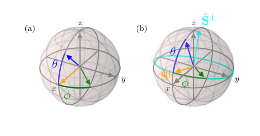
<figcaption class="paper-figure-caption"><b>Fig 3.</b> Figure 3. Visualization of the spin expectation values of the spin coherent states |θi, ϕi⟩for (a) δ = 0 and (b) 0 &lt; δ &lt; δc. The orange arrow corresponds to the mean-field state |ψi⟩= |ϕi = 0, θi = 0⟩. The green and blue arrows illustrate spin expectation values for ϕ ̸= 0 and θ ̸= 0 respectively. The cyan arrow labels the direction perpendic- ular to the mean-field spin and the y-direction. ϕ describes deflections of the mean-field spin in the plane perpendicular to this vector.</figcaption>
</figure>
<figure class="paper-figure-card">
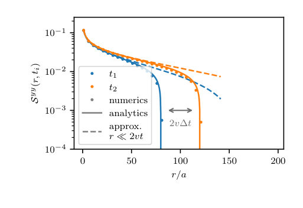
<figcaption class="paper-figure-caption"><b>Fig 4.</b> Figure 4. Correlations for nearest neighbor interactions at vt1 = 40a and vt2 = 60a for Λ = 1/a. The dots are numerically calculated by integrating the exact expressions respecting the angular dependence in ωk. The solid blue line corresponds to the analytical result in Eq. (17) and the dashed line corresponds to a small r expansion given by ((r/a)−βq/4 − ar/(4vt)2βq/4)/8.</figcaption>
</figure>
</div>

<p><strong>Summary.</strong> This paper develops an analytical theory for studying how quantum correlations evolve (quench dynamics) in 2D spin models with power-law interactions and a staggered magnetic field. By combining linear spin-wave theory with a low-energy effective theory, the authors overcome limitations encountered when modeling short-range interactions near critical points. The results offer quantitative predictions for observable quantities like correlation functions, guiding experimental efforts using platforms such as Rydberg atoms.</p>
<p><strong>Why it may be interesting.</strong> This work is highly relevant to AMO physics as it models spin systems whose dynamics can be realized using Rydberg atoms or polar molecules. The ability to analytically handle quench dynamics near criticality provides powerful tools for interpreting experimental measurements of excitation gaps.</p>
<details>
<summary>Detailed structure</summary>
<p><strong>Main problem.</strong> The paper analytically computes the quench dynamics of a spin-1/2 XY model with power-law interactions subjected to a staggered magnetic field.</p>
<p><strong>Main result.</strong> It provides analytic expressions for phase-type correlations, successfully extending results beyond the limitations of linear spin-wave theory near criticality. The analysis confirms that density-type correlation dynamics are consistent between different theoretical approaches.</p>
<p><strong>Method.</strong> The authors employ a combination of linear spin-wave theory and a low-energy effective theory accounting for strong phase fluctuations via Holstein-Primakoff transformations. Quench spectroscopy formalism is used to calculate time-dependent structure factors.</p>
<p><strong>Model / system.</strong> The system is a 2D spin-1/2 XY model on a square lattice with Hamiltonian including power-law interactions ($J \alpha^{|r_i - r_j|^\alpha}$) and a staggered magnetic field ($\delta$). The dynamics are studied following an initial quench from a product state.</p>
<p><strong>Key observables.</strong> Quench dynamics of phase-type correlations ($S_{yy}(r, t)$) and density-type correlations ($S_{\perp\perp}(r, t)$); excitation gaps and critical behavior.</p>
<p><strong>Important parameters / regimes.</strong> Interaction decay exponent $\alpha$ (ranging from nearest-neighbor to long-range), staggered magnetic field strength $\delta$, and the correlation length/time scales $r, t$.</p>
<p><strong>Assumptions / limitations.</strong> The low-energy theory is necessary because linear spin-wave theory fails for short-range interactions due to infrared divergences. Approximations are made in the continuum limit and small-$k$ expansions.</p>
<p><strong>Figures summary.</strong> Figures illustrate the model setup on a 2D lattice, show spin expectation values of variational mean-field states, and compare numerical results with analytical expressions for correlation functions like $S_{yy}(r, t)$ for nearest neighbor interactions.</p>
<p><strong>Paper structure.</strong> The paper progresses by first defining the Hamiltonian and the physical regimes based on $\alpha$. It then develops the theoretical framework using spin wave theory and low-energy effective Hamiltonians. The core of the work involves deriving explicit analytical expressions for time-dependent correlation functions ($S_{yy}, S_{\perp\perp}$) in different interaction limits, culminating in asymptotic analyses.</p>
</details>
<details>
<summary>Abstract</summary>
<p>In this paper, we analytically compute the quench dynamics of simple product states that evolve under a spin-1/2 XY-model with power-law interactions in a staggered magnetic field. We use linear spin-wave theory as well as a low-energy theory that accounts for strong phase fluctuations. This allows us to provide an analytic expression for the dynamics of phase-type correlations with short-range interactions, where the linear spin-wave theory is known to fail. For density-type correlations the low-energy theory and the linear spin-wave theory give the same result. Our analysis is valid for arbitrary magnetic field strength and in particular provides an analytical understanding of the quench dynamics near criticality. Our results can thus provide useful tools for the experimental observation of excitation gaps and critical behavior.</p>
</details>
<p><sub><a href="#top">↑ back to top</a></sub></p>

<p><a id="paper-2608.14966"></a></p>
<h3 id="floquet-liouville-theory-for-strongly-driven-open-quantum-systems"><a href="http://arxiv.org/abs/2608.14966v1">Floquet-Liouville Theory for Strongly Driven Open Quantum Systems</a></h3>
<p><strong>Authors:</strong> Kamran Akbari, Stephen Hughes<br>
<strong>Type:</strong> theory · <strong>Category:</strong> other · <strong>PDF:</strong> <a href="https://arxiv.org/pdf/2608.14966v1">https://arxiv.org/pdf/2608.14966v1</a><br>
<strong>Analysis basis:</strong> full PDF text, analyzed in chunks
<strong>Topic relevance:</strong> 🔥 <code>methods for driven-dissipative</code> <strong>4/5</strong> · <code>Keldysh / 2PI / non-Gaussian methods</code> <strong>3/5</strong> · <code>correlated / nonlocal dissipation</code> <strong>3/5</strong> · <code>Tavis-Cummings &amp; cavity-many-emitter</code> <strong>2/5</strong> · <code>driven-dissipative phase transition</code> <strong>2/5</strong> · <code>analog quantum simulation</code> <strong>1/5</strong> · <code>non-equilibrium universality</code> <strong>1/5</strong> · <code>quantum measurements</code> <strong>1/5</strong></p>
<div class="figure-strip-hint">↔ Scroll figures horizontally</div>
<div class="paper-figures-scroll">
<figure class="paper-figure-card">
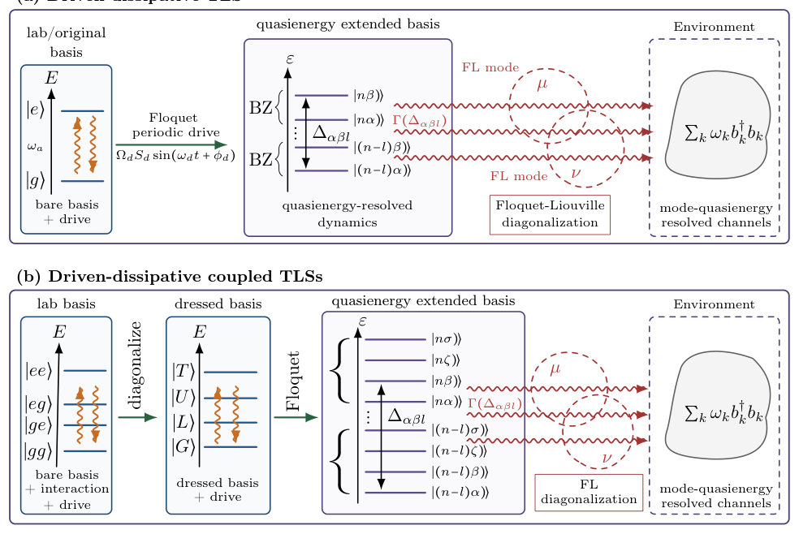
<figcaption class="paper-figure-caption"><b>Fig 1.</b> Figure 1. Schematic illustration of the driven-dissipative single-TLS (a) and coupled-TLS models (b), for example, two dipole-dipole coupled TLSs. In panel (a), the periodically driven two-level system is mapped to the Floquet extended basis, where dissipative processes are resolved through rates Γ(∆αβl), and then spectrally decomposed into FL modes. In panel (b), the coupled-TLS model (two interacting TLSs) is first transformed from the bare basis {∣gg⟩, ∣ge⟩, ∣eg⟩, ∣ee⟩}, where e.g., ∣ge⟩= ∣g⟩1⊗∣e⟩2, to the dressed basis {∣G⟩, ∣L⟩, ∣U⟩, ∣T⟩} and then lifted to the Floquet extended basis, with α, β, ζ, σ ∈{G, L, U, T}, where dissipation is resolved in terms of quasienergy transitions, and...</figcaption>
</figure>
<figure class="paper-figure-card">
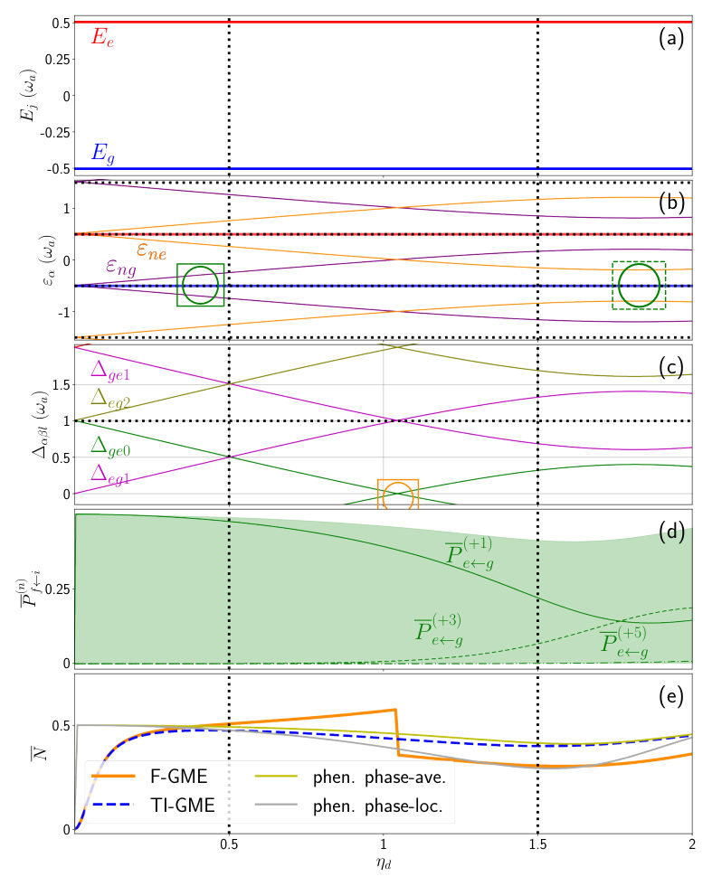
<figcaption class="paper-figure-caption"><b>Fig 2.</b> Figure 2. Driven-dissipative TLS: drive-amplitude dependence of the quantum processes. (a) Static energy levels Eg and Ee of the undriven TLS. (b) Floquet quasienergies εα in the primary BZ. (c) Quasienergy-resolved transition frequencies</figcaption>
</figure>
<figure class="paper-figure-card">
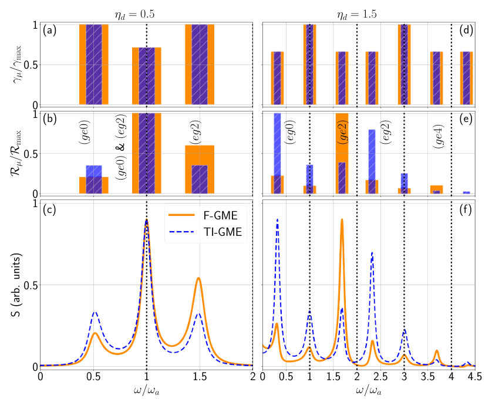
<figcaption class="paper-figure-caption"><b>Fig 3.</b> Figure 3. Driven-dissipative TLS: incoherent spectra. Comparison of the incoherent emission spectra obtained from the F-GME (solid orange) and TI-GME (dashed blue) for a resonantly driven TLS, ωd = ωa, coupled to a flat bath with γ = 0.1ωa. The left column corresponds to ηd = 0.5, and the right column to ηd = 1.5. Panels (c) and (f) show the spectra. Panels (a),(d) show the normalized effective linewidths γµ/γmax of the dominant FL modes, while panels (b),(e) show the corresponding normalized peak-strength measure Rµ/Rmax, with Rµ = Re(Wµ)/γµ (see text). The orange and blue bars use the same convention as the spectra: thick solid bars for the F-GME and thinner dashed bars for the TI-GME....</figcaption>
</figure>
<figure class="paper-figure-card">
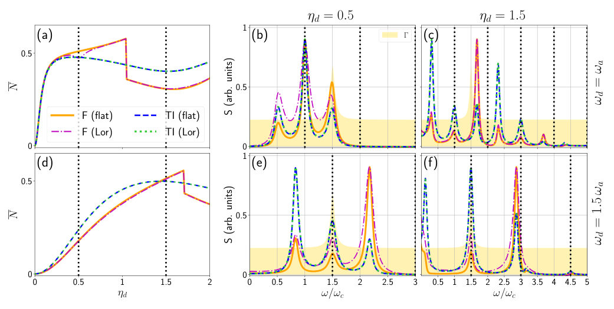
<figcaption class="paper-figure-caption"><b>Fig 4.</b> Figure 4. Driven-dissipative TLS: the effect of a structured bath. (a,d) Long-time averaged excitation population versus ηd, and (b,c,e,f) incoherent emission spectra of a driven-dissipative TLS. The results with a Lorentzian bath (red dash- dotted curves from the F-GME and dotted green curves for the TI-GME) centered at ω0 = 1.5ωa with linewidth and amplitude parameter γ = 0.1ωa are compared with those of with the reference flat bath curves. Here, for the top panels ωd = ωa and the bottom panels ωd = 1.5ωa. The spectra are obtained for the strong drive of ηd = 0.5 (b,e) and deep-strong drive of ηd = 1.5 (c,f). The vertical dotted black lines represent the drive’s specifics, i.e., in panels...</figcaption>
</figure>
<figure class="paper-figure-card">
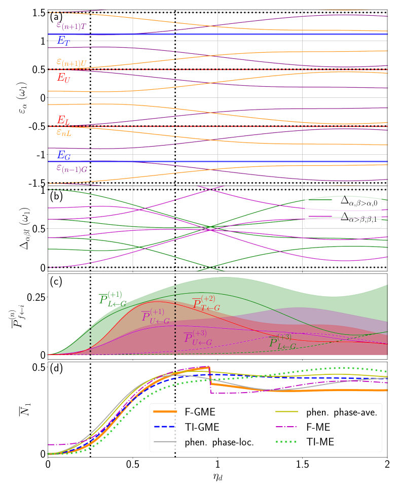
<figcaption class="paper-figure-caption"><b>Fig 5.</b> Figure 5. Driven-dissipative coupled-TLS: drive amplitude dependence of the dynamics. (a) Energy basis; shown are the static eigenenergies by the thick horizontal lines distinguished by their parities (blue: even, red:odd) and thin solid Floquet quasienergies lines distinguished by their generalized parities (purple:even, orange:odd), (b) extended space quasienergy gaps, (c) excitation transition probability when σ(1) x is driven, and (d) long-time average number of excitation for γ = 0.1ωa. For all panels, ωd = ωa is the drive frequency which are shown by the vertical black dotted lines to mark BZs. The sudden dip (discontinuous features) in (d) for the F-GME theory occurs when the same...</figcaption>
</figure>
</div>

<p><strong>Summary.</strong> This paper develops the Floquet-Markov generalized master equation (F-GME) to provide a self-consistent theory for open quantum systems driven periodically. It demonstrates that traditional time-independent descriptions incorrectly treat dissipation by collapsing complex quasienergy decay pathways into static energy gaps. The F-GME correctly accounts for drive-assisted sideband processes, providing essential guidance for modeling strongly driven quantum emitters.</p>
<p><strong>Why it may be interesting.</strong> This work provides a crucial theoretical diagnostic for researchers working on quantum optics or cavity QED who model dissipation under strong driving fields, clarifying when standard master equation approximations break down.</p>
<details>
<summary>Detailed structure</summary>
<p><strong>Main problem.</strong> The standard methods for modeling dissipation in periodically driven quantum systems fail because they incorrectly assume environmental coupling only to static energy transitions, neglecting the full nonperturbative dressing from the drive.</p>
<p><strong>Main result.</strong> The authors introduce a Floquet-Markov generalized master equation (F-GME) that correctly resolves dissipation into drive-assisted sideband processes decaying through quasienergy channels, showing time-independent methods yield qualitatively incorrect results.</p>
<p><strong>Method.</strong> The paper formulates and compares the novel nonsecular F-GME in the quasienergy basis against traditional time-independent master equation approaches for open quantum systems.</p>
<p><strong>Model / system.</strong> The analysis is performed on minimal driven open quantum systems, specifically a harmonically driven two-level system and a coupled two-level system, both weakly coupled to a Markovian bath.</p>
<p><strong>Key observables.</strong> Steady-state populations and emission spectra are used to diagnose the failure of approximate master equations.</p>
<p><strong>Important parameters / regimes.</strong> The key regimes involve strong driving fields, weak dissipation coupling ($\gamma$), and the comparison between internal (interaction) and external (drive) nonperturbative dressing effects.</p>
<p><strong>Assumptions / limitations.</strong> All formalisms rely on the Born-Markov approximation; the core assumption tested is whether the system dynamics can be accurately captured by time-independent approximations when strong driving is present.</p>
<p><strong>Paper structure.</strong> The paper introduces the problem with existing master equation limitations, develops the F-GME framework in the quasienergy basis, applies it to minimal driven systems (TLSs), and compares its results against simpler time-independent models to demonstrate where Floquet consistency is essential.</p>
</details>
<details>
<summary>Abstract</summary>
<p>Periodically driven quantum systems are commonly modeled using master equations constructed in the eigenbasis of an undriven Hamiltonian, implicitly assuming that environmental dissipation couples to static energy transitions even under strong time-periodic driving. The validity of this approximation beyond weak or near-resonant driving remains poorly understood. To address the need for a more self-consistent quantum theory approach, we formulate a nonsecular Floquet--Markov generalized master equation (F-GME) in the quasienergy basis, treating interaction-induced (internal) and drive-induced (external) nonperturbative dressing on an equal footing. We subsequently investigate dissipation in two minimal driven open quantum systems---a harmonically driven two-level system and a harmonically driven coupled-two-level-system---each weakly coupled to a Markovian bath. Comparing the F-GME to a time-independent dressed-basis master equation, we show that even for a flat-bath spectral density and weak dissipation, the two approaches can yield qualitatively different steady-state populations and emission spectra. We resolve dissipation into drive-assisted sideband processes decaying via Floquet extended-space quasienergy channels, and show these channels can hybridize through nonsecular couplings into collective Floquet--Liouville modes governing observable spectral resonances. This analysis demonstrates that time-independent dissipative descriptions can incorrectly weight multiphoton Floquet transitions by collapsing quasienergy-resolved decay pathways into static energy gaps. The F-GME framework provides a systematic diagnostic for identifying regimes where Floquet-consistent dissipation is essential and clarifies the physical origin of discrepancies between commonly used master-equation approaches.</p>
</details>
<p><sub><a href="#top">↑ back to top</a></sub></p>

<p><a id="paper-2608.16486"></a></p>
<h3 id="effective-field-equations-with-stochastic-initial-conditions"><a href="http://arxiv.org/abs/2608.16486v1">Effective field equations with stochastic initial conditions</a></h3>
<p><strong>Authors:</strong> Ian G. Moss<br>
<strong>Type:</strong> theory · <strong>Category:</strong> quantum gases · <strong>PDF:</strong> <a href="https://arxiv.org/pdf/2608.16486v1">https://arxiv.org/pdf/2608.16486v1</a><br>
<strong>Analysis basis:</strong> full PDF text, analyzed in chunks
<strong>Topic relevance:</strong> 🔥 <code>Keldysh / 2PI / non-Gaussian methods</code> <strong>4/5</strong> · <code>methods for driven-dissipative</code> <strong>3/5</strong> · <code>analog quantum simulation</code> <strong>2/5</strong> · <code>driven-dissipative phase transition</code> <strong>2/5</strong> · <code>non-equilibrium universality</code> <strong>2/5</strong> · <code>correlated / nonlocal dissipation</code> <strong>1/5</strong> · <code>quantum measurements</code> <strong>1/5</strong> · <code>scars &amp; prethermalization</code> <strong>1/5</strong></p>
<div class="figure-strip-hint">↔ Scroll figures horizontally</div>
<div class="paper-figures-scroll">
<figure class="paper-figure-card">
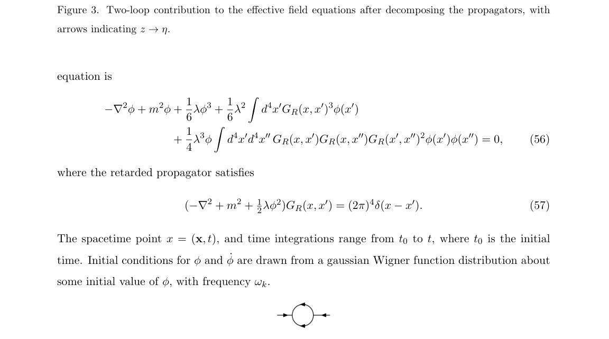
<figcaption class="paper-figure-caption"><b>Fig 1.</b> Figure 4. One-loop contribution to the symmetric function F after decomposing the propagators, with</figcaption>
</figure>
<figure class="paper-figure-card">

<figcaption class="paper-figure-caption"><b>Fig 2.</b> Figure 5. The integral for the first two-loop correction to Truncated Wigner plotted as a function of time</figcaption>
</figure>
<figure class="paper-figure-card">
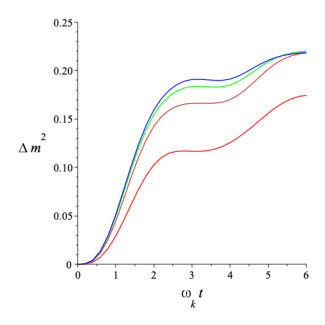
<figcaption class="paper-figure-caption"><b>Fig 3.</b> Fig. 6, at a rate depending on the momentum. There is no sign of saturation, though this may</figcaption>
</figure>
<figure class="paper-figure-card">
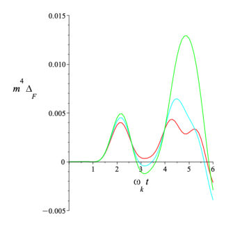
<figcaption class="paper-figure-caption"><b>Fig 4.</b> Figure 6. The integral for the loop correction to the equal time correlator using the most basic approxi-</figcaption>
</figure>
</div>

<p><strong>Summary.</strong> This paper develops an advanced method to calculate the evolution of quantum fields starting from non-equilibrium states by extending the Truncated Wigner Approximation. It systematically incorporates quantum loop corrections into effective field equations, providing theoretical tools for studying phenomena like vacuum decay beyond simple classical approximations.</p>
<p><strong>Why it may be interesting.</strong> It provides a rigorous theoretical framework to bridge classical stochastic methods (TWA) with full quantum field theory loop corrections, which is crucial for accurately modeling non-equilibrium dynamics in many-body systems like BECs.</p>
<details>
<summary>Detailed structure</summary>
<p><strong>Main problem.</strong> The primary goal is to extend the Truncated Wigner technique into a fully fledged effective field equation approach by systematically incorporating quantum loop corrections.</p>
<p><strong>Main result.</strong> The authors show that the naive TWA is valid at one loop, and higher-order corrections are non-local and difficult to implement, suggesting a systematic but challenging path toward full quantum treatment.</p>
<p><strong>Method.</strong> The work combines the Truncated Wigner Approximation (TWA) with the effective action formalism derived from the Schwinger-Keldysh path integral, allowing for loop expansion calculations.</p>
<p><strong>Model / system.</strong> The analysis uses a general Klein-Gordon scalar field $\phi$ with an interaction potential $V(\phi)$, applicable to systems like Bose-Einstein condensates (BEC) and modeling phenomena such as false vacuum decay.</p>
<p><strong>Key observables.</strong> Field expectation values ($\langle \hat{\phi} 
angle$), the Wigner functional, and loop-corrected effective actions $\Gamma[\phi_1, \phi_2]$.</p>
<p><strong>Important parameters / regimes.</strong> The analysis depends on initial state widths ($\Omega_k$ vs. $\omega_k$) and involves comparing results across different loop orders (one-loop, two-loop).</p>
<p><strong>Assumptions / limitations.</strong> The TWA is an approximation valid only for Gaussian initial states; higher-order corrections are non-local and computationally demanding.</p>
<p><strong>Figures summary.</strong> Figures illustrate the structure of two-loop diagrams contributing to the effective action and show how loop correction integrals exhibit oscillatory or saturating behavior over time.</p>
<p><strong>Paper structure.</strong> The paper progresses from establishing the TWA for non-equilibrium evolution, deriving the one-loop corrected field equation, and then analyzing the complexity and results of incorporating higher (two-loop) quantum corrections systematically.</p>
</details>
<details>
<summary>Abstract</summary>
<p>The evolution of quantum field expectation values from an initial non-equilibrium quantum state can be followed numerically using the Truncated Wigner technique. It can track non-perturbative quantum phenomena, such as false vacuum decay, in real time with promising results. Nevertheless, it is an approximate method subject to quantum loop corrections. The extension of Truncated Wigner into a fully fledged effective field equation approach is discussed here, including corrections from higher loops and higher momenta.</p>
</details>
<p><sub><a href="#top">↑ back to top</a></sub></p>

<p><a id="paper-2608.15347"></a></p>
<h3 id="general-lindblad-equation-for-quarkonium-evolution-in-a-quark-gluon-plasma"><a href="http://arxiv.org/abs/2608.15347v1">General Lindblad equation for quarkonium evolution in a quark-gluon plasma</a></h3>
<p><strong>Authors:</strong> Aoumeur Daddi Hammou, Jean-Paul Blaizot, Pol Bernard Gossiaux, Thierry Gousset<br>
<strong>Type:</strong> theory · <strong>Category:</strong> statistical mechanics · <strong>PDF:</strong> <a href="https://arxiv.org/pdf/2608.15347v1">https://arxiv.org/pdf/2608.15347v1</a><br>
<strong>Analysis basis:</strong> full PDF text, analyzed in chunks
<strong>Topic relevance:</strong> 🔥 <code>methods for driven-dissipative</code> <strong>4/5</strong> · <code>Keldysh / 2PI / non-Gaussian methods</code> <strong>3/5</strong> · <code>correlated / nonlocal dissipation</code> <strong>3/5</strong> · <code>quantum measurements</code> <strong>3/5</strong> · <code>driven-dissipative phase transition</code> <strong>2/5</strong> · <code>non-equilibrium universality</code> <strong>1/5</strong></p>
<div class="figure-strip-hint">↔ Scroll figures horizontally</div>
<div class="paper-figures-scroll">
<figure class="paper-figure-card">
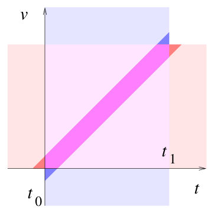
<figcaption class="paper-figure-caption"><b>Fig 1.</b> Figure 1. Domains of integration corresponding to Eqs. (2.10) [blue] and (2.11) [red]. The band corresponding to |t −v| &lt; τE is shown with darker colours.</figcaption>
</figure>
<figure class="paper-figure-card">
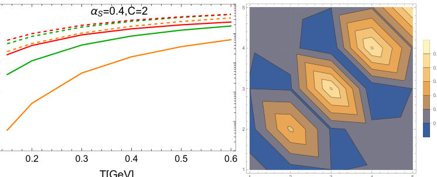
<figcaption class="paper-figure-caption"><b>Fig 2.</b> Figure 2. Left: Plain curves illustrate the diagonal elements ⟨n|Γs|n⟩as a function of the QGP temperature T for the bound c¯c vacuum-states: J/ψ (orange), χc (green) and ψ′ (red); the correlator is evaluated with mD taken as 2T and αs = 0.4. Dashed curves represent the same quantities neglecting the effect of energy gaps (imaginary potential approximation). Right: Contour plot of the elements ⟨m|Γs|n⟩for T = 0.4 GeV, and n, m ≤5. Same choice for αs and mD/T as in the left panel.</figcaption>
</figure>
<figure class="paper-figure-card">
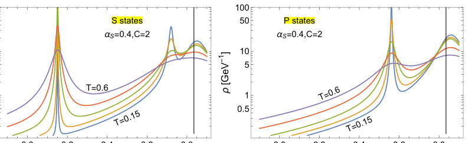
<figcaption class="paper-figure-caption"><b>Fig 3.</b> Figure 3. Left: Spectral density according to Eq. (3.8) for T = 0.15, 0.2, 0.3, 0.4 and 0.6 GeV (S states). Right: same for P states.</figcaption>
</figure>
<figure class="paper-figure-card">
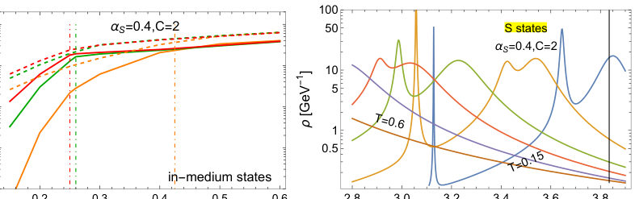
<figcaption class="paper-figure-caption"><b>Fig 4.</b> Figure 4. Left: same as Fig. 4 (left) for in-medium eigenstates of the effective T-dependent real- potential defined in [62]; the dot-dashed vertical lines represent, for each state, the T beyond which it ceases to be bound, namely Tdiss(J/ψ) ≈0.41 GeV, Tdiss(χc) ≈0.26 GeV, and Tdiss(ψ′) ≈0.25 GeV. Right: same as Fig. 3 (left) for in-medium states, for T = 0.15 (blue), 0.2 (orange), 0.25 (green), 0.3 (red), 0.4 (purple) and 0.6 (brown) GeV.</figcaption>
</figure>
<figure class="paper-figure-card">
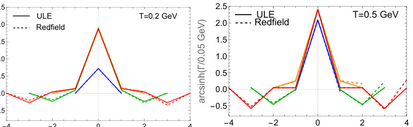
<figcaption class="paper-figure-caption"><b>Fig 5.</b> Figure 5. Left: Comparison between ⟨m|ΓBE s |n⟩(dashed lines) and ⟨m|ΓULE s |n⟩(plain lines) in the s-channel for mD = 2T and T = 0.2 GeV. Each line correspond to given fixed sum m+n: 4 (blue), 6 (orange), 8 (green) and 10 (red); Using the arcsinh allows to compress the large values of ⟨m|Γs|n⟩, making the small value more visible, while preserving the sign. Right: same for T = 0.5 GeV.</figcaption>
</figure>
</div>

<p><strong>Summary.</strong> The paper addresses the challenge of modeling quarkonium evolution in a QGP by deriving a universal Lindblad master equation. This new formalism overcomes limitations of previous models that could only describe specific temperature regimes. It provides a unified, quantum description for $ar{Q}Q$ pair dynamics across the entire cooling history of the plasma.</p>
<p><strong>Why it may be interesting.</strong> This work is highly relevant as it applies advanced open quantum system techniques (Lindblad master equations) to a strongly interacting, non-equilibrium many-body system (QGP), bridging concepts from quantum optics/dissipation theory into high-energy nuclear physics.</p>
<details>
<summary>Detailed structure</summary>
<p><strong>Main problem.</strong> Developing a quantum mechanical formalism to accurately model quarkonium ($ar{Q}Q$) evolution within the Quark-Gluon Plasma (QGP) that remains valid across all temperature regimes.</p>
<p><strong>Main result.</strong> The authors derive a general, non-abelian Lindblad master equation (ULE) that unifies descriptions previously restricted to separate Quantum Brownian Motion and Quantum Optical regimes.</p>
<p><strong>Method.</strong> The derivation uses the Open Quantum System approach, starting from the reduced density matrix evolution and transforming it into a Lindblad form via approximations like Born-Markov.</p>
<p><strong>Model / system.</strong> The system models heavy quark-antiquark pairs interacting with a QGP. The dynamics are governed by a generalized Lindblad master equation that incorporates non-unitary dissipation terms derived from plasma correlators.</p>
<p><strong>Key observables.</strong> Quarkonium suppression, spectral functions, and the coupled singlet-octet dynamics of the $ar{Q}Q$ pair.</p>
<p><strong>Important parameters / regimes.</strong> The temperature ($T$) relative to the energy gap ($\Delta E$), which dictates the transition between QBM ($T \gtrsim \Delta E$) and QO ($\Delta E \gtrsim T$) regimes.</p>
<p><strong>Assumptions / limitations.</strong> The derivation relies on the Born-Markov approximation, and some intermediate steps assume thermal equilibrium (KMS boundary conditions) or non-relativistic treatment of the heavy quarks.</p>
<p><strong>Figures summary.</strong> Not specified in the notes; the focus is on deriving equations and illustrating key quantities like decay rates and spectral density using the derived framework.</p>
<p><strong>Paper structure.</strong> The paper progresses from identifying the limitations of existing QME approaches (restricted by $T$ vs $\Delta E$) to deriving the general Lindblad form, showing how it unifies descriptions across different physical regimes, and finally illustrating its application via key observables.</p>
</details>
<details>
<summary>Abstract</summary>
<p>Accurate modelling and understanding of quarkonium production in ultrarelativistic heavy ion collisions requires a formalism that preserves the quantum properties of microscopic $\bar{Q}Q$ systems while treating the interaction of such pairs with the quark-gluon plasma (QGP). The open quantum system approach has recently emerged as one of the most fruitful schemes to meet such requirements. However, the quantum master equations obtained so far in this context are derived assuming a strict ordering between the QGP temperature $T$ and the $\bar{Q}Q$ energy gaps ($ΔE$) of the quarkonia bound states. This limits their predictive power since, as the QGP expands and cools down, the system traverse all regimes between the quantum Brownian motion (QBM) regime for $T\gtrsim ΔE$ to the quantum optical (QO) regime for $ΔE\gtrsim T$. In this paper, we derive and present a more general non-abelian quantum master equation of the Lindblad type, which does not suffer from these limitations and thus allows to faithfully describe the quantum evolution of the $Q\bar{Q}$ pairs during the whole QGP-evolution. We also provide some illustration of the key quantities governing this equation.</p>
</details>
<p><sub><a href="#top">↑ back to top</a></sub></p>

<p><a id="paper-2608.14979"></a></p>
<h3 id="quantum-boltzmann-equation-self-consistent-field-for-the-entropic-regularization-of-mean-field-singularities"><a href="http://arxiv.org/abs/2608.14979v1">Quantum Boltzmann Equation Self-Consistent-Field for the Entropic Regularization of Mean-Field Singularities</a></h3>
<p><strong>Authors:</strong> Romit Chakraborty<br>
<strong>Type:</strong> theory · <strong>Category:</strong> strongly correlated electrons · <strong>PDF:</strong> <a href="https://arxiv.org/pdf/2608.14979v1">https://arxiv.org/pdf/2608.14979v1</a><br>
<strong>Analysis basis:</strong> full PDF text, analyzed in chunks
<strong>Topic relevance:</strong> 🔥 <code>Keldysh / 2PI / non-Gaussian methods</code> <strong>4/5</strong> · <code>methods for driven-dissipative</code> <strong>3/5</strong> · <code>quantum measurements</code> <strong>3/5</strong> · <code>driven-dissipative phase transition</code> <strong>2/5</strong> · <code>non-equilibrium universality</code> <strong>2/5</strong> · <code>correlated / nonlocal dissipation</code> <strong>1/5</strong> · <code>scars &amp; prethermalization</code> <strong>1/5</strong></p>
<div class="figure-strip-hint">↔ Scroll figures horizontally</div>
<div class="paper-figures-scroll">
<figure class="paper-figure-card">
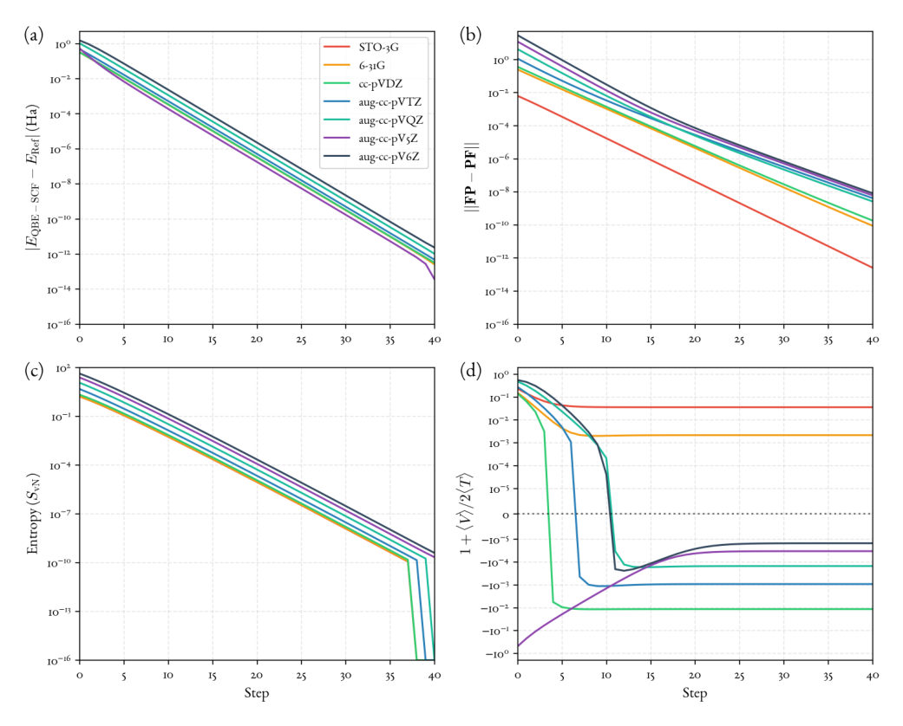
<figcaption class="paper-figure-caption"><b>Fig 1.</b> FIG. 1. H2 at Equilibrium. QBE-SCF relaxes a perturbed SAD guess across a hierarchy of basis sets. We see the monotonic decay of energy error w.r.t Restricted Hartree-Fock in (a), the commutator norm ∥FP−PF∥in (b). Purification of the density matrix is shown in (c), and (d) confirms restoration of the virial theorem at equilibrium.</figcaption>
</figure>
<figure class="paper-figure-card">
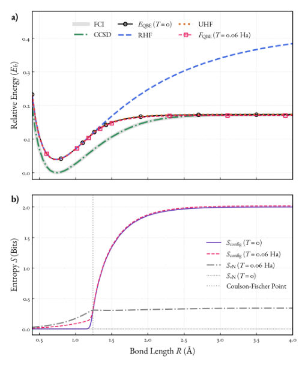
<figcaption class="paper-figure-caption"><b>Fig 2.</b> FIG. 2. Dissociation of H2. (a) Potential energy curves (cc-pVTZ). Zero-temperature QBE energy (EQBE) recovers the UHF asymptote. (b) Configurational entropy (Sconfig) shows the transition from a closed-shell singlet (0.0 bits) to the perfect-pairing diradical ( 1 √</figcaption>
</figure>
<figure class="paper-figure-card">
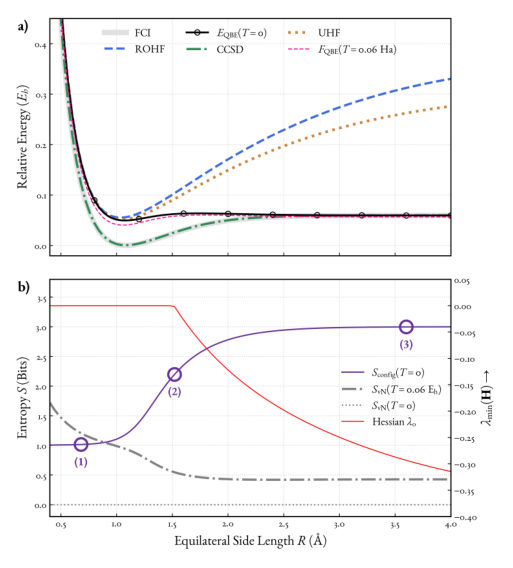
<figcaption class="paper-figure-caption"><b>Fig 3.</b> FIG. 3. H3 dissociation under D3h at cc-pVDZ. (a) EQBE(T) = 0 converges to FCI in the dissociative limit as SvN stays pinned to 0.0 in (b). Sconfig(T) = 0 maintains a 1.0-bit baseline for the unpaired radical (1) before instability in the Aufbau-projected density (λmin(H) &lt; 0) (2) triggers a fractionalization that saturates at 3.0 bits to recover the Mott insulator limit (3). Natural orbitals at (1), (2), and (3) are shown in Figure. 4</figcaption>
</figure>
<figure class="paper-figure-card">
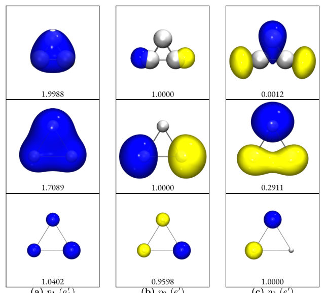
<figcaption class="paper-figure-caption"><b>Fig 4.</b> FIG. 4. Evolution of the QBE-SCF spatial natural orbitals at T = 0 during H3 dissociation. In the tightly bound molecular regime (1), the spatial natural orbitals reflect a delocalized closed-shell configuration with a strongly dominant core pair. As internuclear separation increases in (2), the primary bonding orbital polarizes as macroscopic occupation shifts into the antibonding state, transiently breaking the D3h symmetry. Upon reaching the asymptotic Mott limit in (3), the spatial natural orbitals localize into non-interacting atomic spheres with exact integer occupations.</figcaption>
</figure>
<figure class="paper-figure-card">
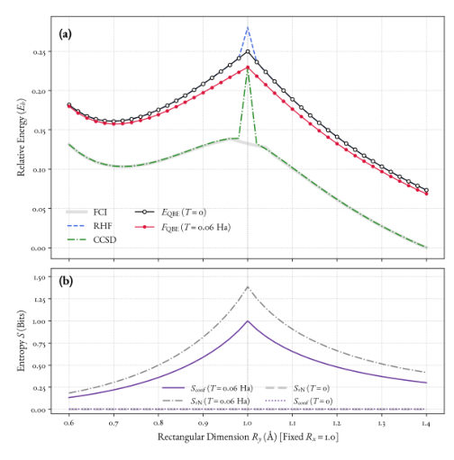
<figcaption class="paper-figure-caption"><b>Fig 5.</b> FIG. 5. Energy and entropy profiles for H4 rectangu- lar distortion in 6-31g. (a) QBE-SCF at T = 0 bypasses the RHF discontinuity at Ry = 1.0 ˚A. (b) The entropy is zero at T = 0. A temperature of T = 0.06 Ha induces frac- tionalization at the crossing, lowering the free energy.</figcaption>
</figure>
</div>

<p><strong>Summary.</strong> The authors introduce a Quantum Boltzmann Equation Self-Consistent-Field method that treats molecular electronic structure via kinetic relaxation in phase space. This approach regularizes mean-field singularities—such as those found at bond dissociation or conical intersections—by incorporating entropy, allowing the recovery of highly correlated physics using only single-reference methods.</p>
<p><strong>Why it may be interesting.</strong> This work provides a powerful, physically motivated extension of electronic structure theory by merging quantum statistical mechanics (entropy/thermalization) directly into the SCF cycle to handle strongly correlated regimes.</p>
<details>
<summary>Detailed structure</summary>
<p><strong>Main problem.</strong> The paper addresses mean-field singularities encountered in electronic structure theory, particularly at degeneracies like bond dissociation or conical intersections, which standard methods struggle with.</p>
<p><strong>Main result.</strong> By implementing a kinetic relaxation approach, the method successfully regularizes these singularities, recovering correlated adiabatic surfaces and approaching the Full CI limit without relying on multi-reference wavefunctions.</p>
<p><strong>Method.</strong> It employs a Quantum Boltzmann Equation (QBE) Self-Consistent-Field (SCF) formulation, using a Bhatnagar-Gross-Krook (BGK) collision operator to drive the system toward equilibrium in phase space.</p>
<p><strong>Model / system.</strong> The theory is applied to molecular electronic structure calculations ($ ext{H}_3$, $    ext{BeH}_2$, $  ext{H}_4$), treating the electron cloud via a Wigner quasi-probability distribution. The evolution is governed by a modified QBE that incorporates kinetic relaxation.</p>
<p><strong>Key observables.</strong> Configurational spin entropy ($S_{	ext{config}}$), Von Neumann entropy, and the commutator norm ($\|F P - P F\|$).</p>
<p><strong>Important parameters / regimes.</strong> Collision frequency ($\omega$), electronic temperature parameter ($   ext{Telec}$ or $T$), and basis set hierarchy.</p>
<p><strong>Assumptions / limitations.</strong> The method assumes that the system dynamics can be effectively described by a single-particle Fock operator ($F$) and utilizes kinetic relaxation to bypass strict idempotency constraints inherent in standard SCF methods.</p>
<p><strong>Figures summary.</strong> Figures illustrate $   ext{H}_2$ dissociation tracking energy error across basis sets, showing $S_{	ext{config}}$ transition; they also show entropic regularization of the $  ext{BeH}_2$ conical intersection and the convergence to FCI for $   ext{H}_3$.</p>
<p><strong>Paper structure.</strong> The paper develops the QBE-SCF framework by first establishing its mathematical foundation using BGK relaxation. It then applies this formalism sequentially to resolve specific physical problems: zero-temperature kinetic ergodicity for degeneracies ($    ext{H}_3$), and finite-temperature entropic regularization for avoided crossings ($  ext{BeH}_2$).</p>
</details>
<details>
<summary>Abstract</summary>
<p>We present a Quantum Boltzmann Equation self-consistent-field (QBE-SCF) formulation for molecular electronic structure in which the one-electron reduced density matrix is propagated in a fixed Gaussian orbital basis and relaxed by a Bhatnagar-Gross-Krook collision operator toward a Fermi-Dirac equilibrium defined by the instantaneous Fock matrix. At stationarity, the converged density and Fock matrices satisfy $[\mathbf{F},\mathbf{P}]=0$, the Hartree-Fock condition. While the zero-temperature equilibrium target reduces to the integer Aufbau projector, the damped collision operator ensures the steady-state density matrix is not necessarily idempotent. This kinetic property affords a dual capacity to resolve mean-field singularities. For spatial degeneracies, such as H$_3$ symmetric dissociation, zero-temperature kinetic ergodicity fractionalizes the active space to recover the GVB limit. For the conical intersection in BeH$_2$ and the H$_4$ structural distortion ($D_{2h} \rightarrow D_{4h} \rightarrow D_{2h}$), finite-temperature entropic regularization recovers correlated adiabatic surfaces from a real-valued single-reference density. By maintaining stable numerical convergence across basis-set hierarchies and resolving static correlation without multi-reference wavefunctions, these results establish kinetic relaxation as a synthesis of single-reference electronic structure and quantum statistical mechanics.</p>
</details>
<p><sub><a href="#top">↑ back to top</a></sub></p>

<p><a id="paper-2608.16028"></a></p>
<h3 id="transport-noise-witnesses-of-electronic-multipartite-entanglement"><a href="http://arxiv.org/abs/2608.16028v1">Transport-Noise Witnesses of Electronic Multipartite Entanglement</a></h3>
<p><strong>Authors:</strong> Shuhan Ding, Prakash Sharma, Zecheng Shen, Jiang-Xiazi Lin, Sergei Urazhdin, Yao Wang<br>
<strong>Type:</strong> theory · <strong>Category:</strong> strongly correlated electrons · <strong>PDF:</strong> <a href="https://arxiv.org/pdf/2608.16028v1">https://arxiv.org/pdf/2608.16028v1</a><br>
<strong>Analysis basis:</strong> full PDF text, analyzed in chunks
<strong>Topic relevance:</strong> 🔥 <code>analog quantum simulation</code> <strong>4/5</strong> · <code>quantum measurements</code> <strong>3/5</strong> · <code>Full counting statistics</code> <strong>2/5</strong> · <code>Keldysh / 2PI / non-Gaussian methods</code> <strong>2/5</strong> · <code>driven-dissipative phase transition</code> <strong>2/5</strong> · <code>correlated / nonlocal dissipation</code> <strong>1/5</strong> · <code>methods for driven-dissipative</code> <strong>1/5</strong> · <code>non-equilibrium universality</code> <strong>1/5</strong></p>
<div class="figure-strip-hint">↔ Scroll figures horizontally</div>
<div class="paper-figures-scroll">
<figure class="paper-figure-card">
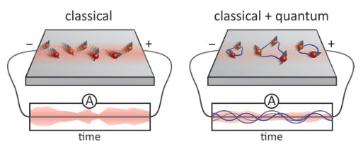
<figcaption class="paper-figure-caption"><b>Fig 1.</b> FIG. 1. Schematic illustrating current noise from classical and quantum sources. Left: Thermal current fluctuations in a classical system, where the low-frequency Johnson noise is set by the thermal distribution of electronic velocities. Right: Quantum fluctuations in a quantum system, whose two-time current correlation contains par- ticular dynamical structures generated by entanglement.</figcaption>
</figure>
<figure class="paper-figure-card">
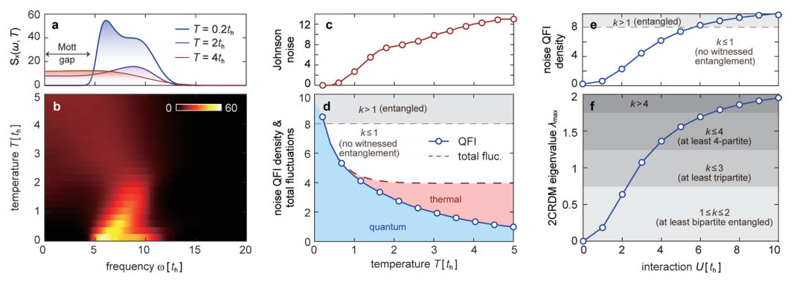
<figcaption class="paper-figure-caption"><b>Fig 2.</b> FIG. 2. Noise spectrum and entanglement witness in the Hubbard model. a, Symmetrized current-noise spectrum S(ω, T) of the half- filled 1D Hubbard model, calculated by DQMC for three representative temperatures: T = 0.2th (blue), 2th (purple), and 4th (red). b, Full temperature evolution of the noise spectrum shown as a false-color map. c, Johnson noise extracted from the ω = 0 spectral intensity in b. d, Temperature dependence of the noise-based QFI density FQ[ ˆJx]/A (dots and solid line) together with the normalized total current fluctuation 4⟨δ ˆJ2 α⟩/A (dashed), with their difference representing the thermal fluctuation. e, f, Zero-temperature interaction dependence of the...</figcaption>
</figure>
<figure class="paper-figure-card">
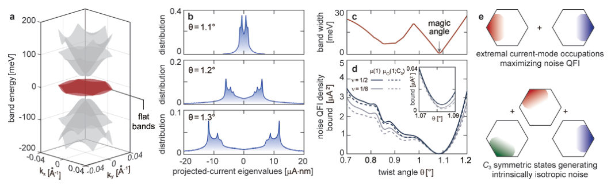
<figcaption class="paper-figure-caption"><b>Fig 3.</b> FIG. 3. Projected active space and isotropic noise in twisted bilayer graphene (TBG). a, Low-energy band structure of TBG (twist angle θ = 1.2◦), where the two red-highlighted bands identify the flat-band manifold effectively separated from remote bands. b, Distributions of projected-current eigenvalues at θ = 1.1◦, 1.2◦, and 1.3◦. c, Twist-angle dependence of bandwidth. d, Twist-angle dependence of the bounds for noise QFI (solid) and C3-symmetric isotropic noise (dashed) at ν = 1/8 and 1/2 per spin and valley. The inset shows the region near the magic angle. e, Schematic illustration of the extremal current-mode occupations (upper) that maximize the noise QFI and define the supremum in...</figcaption>
</figure>
<figure class="paper-figure-card">

<figcaption class="paper-figure-caption"><b>Fig 4.</b> FIG. 4. Entanglement witness in twisted bilayer MoTe2 (tMoTe2) and fractional Chern insulator (FCI). a, Low-energy band structure of tMoTe2, with the projected Chern band highlighted. b, Projected current magnitude over the mini-Brillouin zone; circles denote the 27 momenta included in ED simulations. c, Twist-angle dependence of the upper bounds µ(k) for the noise QFI density at ν = 2/3 hole filling per moir´e unit cell, with the inset highlighting the region near the magic angle. d, Comparison between the k = 1 noise-QFI bound (solid line, same as in c) and the isotropic-noise bound (dashed line). e,f, Momentum-resolved eigenspectra, labeled by the linearized momentum index N2 × k1 + k2,...</figcaption>
</figure>
</div>

<p><strong>Summary.</strong> The paper introduces a novel method to detect multipartite entanglement in interacting electrons within solid-state materials by analyzing the equilibrium current noise spectrum. By comparing measured quantum fluctuations against theoretically derived upper bounds, the authors certify entanglement in complex systems like twisted bilayer graphene and $  ext{tMoTe}_2$. This provides an experimentally relevant diagnostic tool for characterizing exotic quantum states of matter.</p>
<p><strong>Why it may be interesting.</strong> This work provides a concrete, measurable link between fundamental quantum information concepts (entanglement) and observable transport properties in solid-state materials, which is highly relevant for understanding correlated electron physics beyond simple mean-field theories.</p>
<details>
<summary>Detailed structure</summary>
<p><strong>Main problem.</strong> The goal is to develop a transport-based protocol to certify intrinsic multipartite entanglement among interacting electrons in solid-state quantum materials.</p>
<p><strong>Main result.</strong> The authors successfully benchmarked the method on systems like twisted bilayer graphene and $ ext{tMoTe}_2$, showing that noise measurements can detect entanglement when exceeding theoretical upper bounds derived from microscopic parameters.</p>
<p><strong>Method.</strong> The protocol utilizes the equilibrium current noise spectrum, transforming it to isolate quantum fluctuations (QFI) which are then compared against a basis-independent upper bound ($\mu(k)$).</p>
<p><strong>Model / system.</strong> The framework is applied to paradigmatic strongly correlated systems including the Hubbard model, twisted bilayer graphene (TBG), and $ ext{tMoTe}_2$ exhibiting Fractional Chern Insulating states.</p>
<p><strong>Key observables.</strong> Equilibrium noise spectrum $S_{\alpha}(\omega, T)$, Quantum Fisher Information (QFI) extracted from noise, and symmetry-constrained isotropic noise ($  ilde{G}_{igcirc}(T)$).</p>
<p><strong>Important parameters / regimes.</strong> Low temperatures ($T 	o 0$), the number of entangled particles ($k+1$), and material parameters like bond lengths and tunneling amplitudes.</p>
<p><strong>Assumptions / limitations.</strong> The method assumes that current noise measurements are experimentally accessible observables, allowing the extension of entanglement witnesses from quantum optics to macroscopic solid-state systems.</p>
<p><strong>Figures summary.</strong> Figures illustrate the evolution of the noise spectrum in the Hubbard model across temperatures, and show comparisons between various theoretical bounds (QFI vs. isotropic) for TBG and $ ext{tMoTe}_2$.</p>
<p><strong>Paper structure.</strong> The paper introduces the general transport-noise witness based on current noise, derives the necessary upper bound, and then benchmarks this method sequentially across three distinct physical models: Hubbard model, TBG, and $  ext{tMoTe}_2$, refining the witness using symmetry constraints.</p>
</details>
<details>
<summary>Abstract</summary>
<p>Entanglement among particles is a defining feature of strongly correlated quantum materials, distinguishing them from conventional metals and semiconductors. The ability to certify intrinsic entanglement among interacting electrons in solid-state materials is important not only for classifying quantum states of matter, but also for developing material-based quantum technologies. Here, we introduce a transport-based protocol for witnessing multipartite entangled electronic states, based on the equilibrium noise spectrum as an experimentally accessible observable. The appropriately integrated, symmetrized, and projected current noise obeys an upper bound that can be derived from microscopic model parameters and is invariant with respect to the choice of electronic basis. We benchmark this framework in several paradigmatic systems, including twisted bilayer graphene, twisted bilayer MoTe$_2$, and Hubbard models, certifying entanglement in the fractional Chern insulating state. The method extends recently developed scattering-based entanglement witnesses to ultralow-temperature materials, where conventional spectroscopic probes are inaccessible but candidate entangled states are expected to arise.</p>
</details>
<p><sub><a href="#top">↑ back to top</a></sub></p>

<p><a id="paper-2608.15637"></a></p>
<h3 id="a-scalable-chip-integrated-single-photon-source-array-based-on-50-individually-addressable-neutral-atoms"><a href="http://arxiv.org/abs/2608.15637v1">A scalable chip-integrated single-photon source array based on 50 individually addressable neutral atoms</a></h3>
<p><strong>Authors:</strong> Ya-Dong Hu, Tian-Yang Zhang, Dong-Qi Ma, Yi-Chen Zhang, Liang Chen, Wen-Yi Zhu, Hong-Jie Fan, Yan-Lei Zhang, Zhu-Bo Wang, Gang Li, Xi-Feng Ren, Guang-Can Guo, Chang-Ling Zou<br>
<strong>Type:</strong> experiment · <strong>Category:</strong> quantum information and computing · <strong>PDF:</strong> <a href="https://arxiv.org/pdf/2608.15637v1">https://arxiv.org/pdf/2608.15637v1</a><br>
<strong>Analysis basis:</strong> full PDF text, analyzed in chunks
<strong>Topic relevance:</strong> 🔥 <code>QC/QI experiment</code> <strong>4/5</strong> · <code>analog quantum simulation</code> <strong>3/5</strong> · <code>quantum optics experiment</code> <strong>3/5</strong> · <code>Rydberg arrays</code> <strong>2/5</strong> · <code>Tavis-Cummings &amp; cavity-many-emitter</code> <strong>1/5</strong> · <code>interference shaping light</code> <strong>1/5</strong> · <code>quantum measurements</code> <strong>1/5</strong></p>
<div class="figure-strip-hint">↔ Scroll figures horizontally</div>
<div class="paper-figures-scroll">
<figure class="paper-figure-card">

<figcaption class="paper-figure-caption"><b>Fig 1.</b> FIG. 1. A chip-interfaced waveguide fan-out for neutral-atom single-photon source arrays. a, Optical layout. A one-dimensional array of 87Rb atoms (left) is held in optical tweezers; each atom acts as a two-level emitter (|𝑒⟩→|𝑔⟩). Their fluorescence is collected by an objective and relayed onto the input facet of the waveguide array, where the magnified atom spacing matches the 36 µm waveguide pitch. The chip then fans the channels out to a 127 µm pitch at the output facet, matching a commercial fiber array. b&amp;c, Micrographs of the input (b) and output (c) facets of the chip, recorded at the same magnification. The blue circle marks a single waveguide. Waveguides across the row differ in...</figcaption>
</figure>
<figure class="paper-figure-card">

<figcaption class="paper-figure-caption"><b>Fig 2.</b> FIG. 2. One-to-one channel mapping and simultaneous operation of 50 neutral-atom single-photon sources. a, Fluorescence collected by each of the 50 channels as a single atom is translated across the focal plane, the displacement being controlled by the radio-frequency (RF) drive of the tweezer acousto-optic deflector (AOD). The scan resolves 50 peaks, each corresponding to one waveguide channel (labeled 1-50). b, Collection mode line shape. After removing their relative offsets and normalizing, the individual peaks (light blue) overlap; the averaged response (dark blue) is Gaussian with a waist 𝑤0 = 1.02 µm, set by the fluorescence collection mode at the atom plane. c, Measured 50 × 50...</figcaption>
</figure>
<figure class="paper-figure-card">

<figcaption class="paper-figure-caption"><b>Fig 3.</b> FIG. 3. State readout, deterministic loading, and stable operation of the source array. a, Single-atom readout fidelity versus detection time, approaching near-unity at longer integration. The inset shows the normalized photon-count distribution for channel 6 over a 5 ms window, resolving the 0-atom and 1-atom states with a readout fidelity of 98.6%. b, Average single-trap fill fraction after rearrangement (left axis, blue) and whole-array preparation success rate (right axis, red) as a function of the target atom number 𝑁, starting from an initial array of 48 traps. c, Single-atom survival probability versus holding time. The red data were obtained with 10 target atoms prepared by...</figcaption>
</figure>
<figure class="paper-figure-card">

<figcaption class="paper-figure-caption"><b>Fig 4.</b> FIG. 4. Insertion-loss characterization of a 784-channel waveguide array. a, Optical micrograph of the input facet, where the channels form a 16-row by 49-column array with a 36 µm pitch. At the opposite facet, the channels are rearranged into a 4 × 196 array with a 127 µm pitch, matching a two-dimensional fiber array. The blue circles mark three individual waveguides. Variations in the apparent brightness and contrast of the channels across the micrograph arise from non-uniform illumination during imaging. b, Spatial map of the insertion loss of all 784 channels (196 groups of four waveguides), arranged according to their physical positions in a. Each rounded square represents one channel...</figcaption>
</figure>
</div>

<p><strong>Summary.</strong> The research presents a breakthrough in creating scalable, chip-integrated single-photon source arrays using individually trapped neutral atoms. By employing a waveguide fan-out structure, the authors successfully connect the atomic array to standard fiber optics while maintaining high performance metrics like low cross-talk and confirmed single-photon emission. This establishes a robust, fiber-native platform crucial for advancing quantum information processing.</p>
<p><strong>Why it may be interesting.</strong> This work directly addresses a critical engineering bottleneck—the physical interface between quantum emitters and classical photonics infrastructure—which is essential for realizing scalable quantum networks based on neutral atoms.</p>
<details>
<summary>Detailed structure</summary>
<p><strong>Main problem.</strong> The central challenge is developing a scalable, chip-integrated platform to generate arrays of identical single-photon sources using neutral atoms for quantum networking and computation.</p>
<p><strong>Main result.</strong> The authors successfully demonstrated an architecture that maps 50 individually addressable neutral atom sources onto a commercial fiber array with low cross-talk (0.4%) and loss (2.9 dB).</p>
<p><strong>Method.</strong> They utilized a glass waveguide fan-out chip interface to bridge the gap between the microscopic atomic tweezer pitch ($    ext{5 } \mu ext{m}$) and standard optical fiber pitches ($   ext{127 } \mu   ext{m}$).</p>
<p><strong>Model / system.</strong> The system uses $^{87}	ext{Rb}$ neutral atoms trapped in an optical tweezer array. The platform is characterized by its ability to maintain high fidelity (low cross-talk, $g^{(2)}(0)=0.29$) while supporting active reservoir replenishment for sustained operation.</p>
<p><strong>Key observables.</strong> Second-order correlation function ($g^{(2)}(0) = 0.29$), average nearest-neighbor cross-talk ($    ext{0.4\%}$), uniform insertion loss ($   ext{2.9 dB}$), and array reset rate ($  ext{118 Hz}$).</p>
<p><strong>Important parameters / regimes.</strong> Scalability demonstrated up to $    ext{784}$ channels; source subarrays prepared with $>93\%$ fill fraction.</p>
<p><strong>Assumptions / limitations.</strong> The single-photon emission characterization is currently limited by detector dark counts and residual cooling-light scattering.</p>
<p><strong>Figures summary.</strong> Figures illustrate the chip-interfaced waveguide fan-out, cross-talk matrices for 50 channels, confirmation of antibunching via $g^{(2)}(	au)$ measurements, and details on array preparation success rates and reset dynamics.</p>
<p><strong>Paper structure.</strong> The paper progresses by first establishing the necessity of scalable interfaces, detailing the chip fabrication and characterization (cross-talk, loss), confirming single-photon purity ($g^{(2)}$), and finally demonstrating active control mechanisms like reservoir replenishment to ensure sustained operation across large arrays.</p>
</details>
<details>
<summary>Abstract</summary>
<p>Scalable arrays of identical single-photon sources are a central resource for photonic quantum information processing, quantum networks and quantum metrology. Neutral atoms provide intrinsically identical emitters that can be assembled and rearranged in optical tweezers, but a many-channel fiber interface to individually trapped atoms has remained a major technical challenge. Here we demonstrate a chip-interfaced single-photon source array based on 50 individually addressable $^{87}\mathrm{Rb}$ atoms. A glass waveguide fan-out converts the \SI{5}{\micro m} pitch of the optical-tweezer array to the \SI{127}{\micro m} pitch of a commercial fiber array, mapping each atom to its own waveguide, fiber and single-photon detector. We resolve all 50 channels with an average nearest-neighbor cross-talk of $0.4\%$ and a uniform insertion loss of \SI{2.9}{dB}, and verify single-photon emission with $g^{(2)}(0)=0.29$, presently limited by detector dark counts and residual cooling-light scattering. Combining per-channel atom discrimination, rearrangement and reservoir replenishment, we prepare source subarrays of up to 24 atoms with a $93\%$ fill fraction. For small target numbers, atom loss is repaired from the reservoir at the detection-limited rate of \SI{118}{Hz}. We further fabricate a 784-channel waveguide chip, showing that the photonic interface can be extended well beyond the present number. This architecture establishes a fiber-native neutral-atom platform for larger arrays of identical single-photon sources.</p>
</details>
<p><sub><a href="#top">↑ back to top</a></sub></p>

<p><a id="paper-2608.16593"></a></p>
<h3 id="evidence-for-cavity-induced-metallic-phase-from-entropic-electron-correlation-effects"><a href="http://arxiv.org/abs/2608.16593v1">Evidence for cavity-induced metallic phase from entropic electron correlation effects</a></h3>
<p><strong>Authors:</strong> Jacob Horak, Dominik Sidler<br>
<strong>Type:</strong> theory · <strong>Category:</strong> statistical mechanics · <strong>PDF:</strong> <a href="https://arxiv.org/pdf/2608.16593v1">https://arxiv.org/pdf/2608.16593v1</a><br>
<strong>Analysis basis:</strong> full PDF text, analyzed in chunks
<strong>Topic relevance:</strong> 🔥 <code>analog quantum simulation</code> <strong>4/5</strong> · <code>Tavis-Cummings &amp; cavity-many-emitter</code> <strong>3/5</strong> · <code>driven-dissipative phase transition</code> <strong>3/5</strong> · <code>non-equilibrium universality</code> <strong>2/5</strong> · <code>Keldysh / 2PI / non-Gaussian methods</code> <strong>1/5</strong> · <code>correlated / nonlocal dissipation</code> <strong>1/5</strong> · <code>methods for driven-dissipative</code> <strong>1/5</strong></p>
<div class="figure-strip-hint">↔ Scroll figures horizontally</div>
<div class="paper-figures-scroll">
<figure class="paper-figure-card">

<figcaption class="paper-figure-caption"><b>Fig 1.</b> FIG. 1. Simplified collective 2-level model to qualitatively in- vestigate the formation of metallic transversal electron cor- relation phases under collective SC in the thermodynamic limit, as introduced in Ref. 23. Mean Hartree-Fock orbital energies are labeled ⟨̃𝜖𝑖⟩which jointly accumulate to the en- semble Hartree-Fock energy 𝐸0 (blue). The cavity-induced 𝑁tot 𝑜 -fold degenerate space is occupied 𝑁𝑜-times with excita- tion energy Δ𝑖𝑜= ̃𝜖𝑜−⟨̃𝜖𝑖⟩&gt; 0. Depending on the chemi- cal ensemble, exciting 𝑁𝑜orbitals can lower the transversal correlation free-energy 𝐹corr entropically, and thus becoming energetically favorable. Two qualitatively different cases can be distinguished in the...</figcaption>
</figure>
<figure class="paper-figure-card">

<figcaption class="paper-figure-caption"><b>Fig 2.</b> FIG. 2. Polarizability from transversal correlations for insulator-like (top) and metallic regime (bottom) given by Eqs. (14) and (15), respectively for three different temperature 𝑇choices. Phase transitions are indicated by dashed vertical lines. The critical point 𝜎0 = 𝑘𝐵𝑇of the para- to spin glass phase transition remains the same for both cases and is indicated by long dashed lines. However, in the metallic case (bottom) the transversal polarizability diverges and we cannot observe the change from the para to spin glass correlated phase. Instead, we can identify the critical points for the uncorrelated to correlated phase transition. As we see from the long dashed lines, we either...</figcaption>
</figure>
</div>

<p><strong>Summary.</strong> The paper develops a theoretical framework showing that collective strong coupling in molecular ensembles within optical cavities can induce electron correlation effects analogous to spin glass physics. By analyzing the free energy landscape, the authors predict that entropic effects can drive a phase transition, potentially causing the system to become metallic by ionizing degenerate orbitals. This provides a major step toward understanding cavity-mediated electronic correlations.</p>
<p><strong>Why it may be interesting.</strong> This work bridges concepts from cavity QED/molecular physics with advanced statistical mechanics models (spin glasses) to predict novel electronic phases (metallization) driven purely by entropy, which is highly relevant for understanding strongly coupled quantum systems.</p>
<details>
<summary>Detailed structure</summary>
<p><strong>Main problem.</strong> The work aims to elucidate the underlying physical mechanism behind collective strong coupling effects in optical cavities that can induce abrupt phase transitions in molecular ensembles.</p>
<p><strong>Main result.</strong> Entropic electron correlations, modeled via a spin glass analogy, can trigger a phase transition that potentially renders the molecular ensemble metallic by entropically ionizing degenerate molecular orbitals.</p>
<p><strong>Method.</strong> The authors derive analytic expressions for correlation-induced polarizability changes by mapping the problem onto the Sherrington-Kirkpatrick (SSK) model and analyzing free energy minimization.</p>
<p><strong>Model / system.</strong> The system involves molecular ensembles strongly coupled to optical cavities, modeled using an effective Hamiltonian whose correlation energy resembles that of a spin glass. The analysis is performed in the thermodynamic limit ($N_{	ext{deg}} 	o \infty$).</p>
<p><strong>Key observables.</strong> Transversal polarizability ($\alpha_{\perp}$), which diverges in the metallic regime and remains finite otherwise.</p>
<p><strong>Important parameters / regimes.</strong> Temperature ($T$), correlation strength ($\sigma_0$), and the condition $f(T, \sigma_0) < -\Delta_{io}$ for entering the correlated phase.</p>
<p><strong>Assumptions / limitations.</strong> The analysis relies on approximating the correlation energy using a CIS ansatz and mapping it to the SSK model; specific approximations are made regarding random interaction variances and limits like $E_{	ext{loc}} 	o 0$.</p>
<p><strong>Figures summary.</strong> Figure 2 illustrates how polarizability ($\alpha_{\perp}$) behaves across different temperatures, showing distinct curves for insulator-like and metallic regimes.</p>
<p><strong>Paper structure.</strong> The paper establishes the physical problem (strong coupling in cavities), develops a theoretical framework linking it to spin glass physics via correlation energy minimization, derives expressions for observables like $\alpha_{\perp}$, and finally analyzes the conditions under which metallicity arises from entropic effects.</p>
</details>
<details>
<summary>Abstract</summary>
<p>Experiments have revealed that collective strong coupling in optical cavities can drastically alter the conductivity and dielectric properties of molecular ensembles, or even trigger abrupt phase transitions (in Rayleigh scattering or dispersion force driven conformational equilibrium). Until now, the underlying physical mechanism has remained unknown. A recently proposed theory attributes these collective effects to cavity-induced electron correlations that share properties of the known spherical Sherrington-Kirkpatrick model of a spin glass. As a consequence, entropic effects can trigger a phase transition in the inter-molecular electron correlations that could potentially explain the above experiments. In the following work, we derive analytic expressions for the correlation (free-)energy-induced polarizability changes, which reveal that under certain conditions collective strong coupling can even render our molecular ensemble metallic by entropically ionizing collectively degenerate molecular orbitals. Our results are a first major step towards a holistic theory of cavity-mediated electron correlation effects.</p>
</details>
<p><sub><a href="#top">↑ back to top</a></sub></p>

<p><a id="paper-2608.16219"></a></p>
<h3 id="non-equilibrium-instantaneous-approximation-and-dipole-forbidden-d-d-transitions"><a href="http://arxiv.org/abs/2608.16219v1">Non-Equilibrium Instantaneous Approximation and Dipole Forbidden d-d Transitions</a></h3>
<p><strong>Authors:</strong> Marco Marino, Lasse Sternemann, Mirko Cinchetti, Frithjof B. Anders<br>
<strong>Type:</strong> theory · <strong>Category:</strong> strongly correlated electrons · <strong>PDF:</strong> <a href="https://arxiv.org/pdf/2608.16219v1">https://arxiv.org/pdf/2608.16219v1</a><br>
<strong>Analysis basis:</strong> full PDF text, analyzed in chunks
<strong>Topic relevance:</strong> 🔥 <code>Keldysh / 2PI / non-Gaussian methods</code> <strong>4/5</strong> · <code>methods for driven-dissipative</code> <strong>3/5</strong> · <code>non-equilibrium universality</code> <strong>3/5</strong> · <code>driven-dissipative phase transition</code> <strong>2/5</strong> · <code>correlated / nonlocal dissipation</code> <strong>1/5</strong> · <code>quantum measurements</code> <strong>1/5</strong> · <code>scars &amp; prethermalization</code> <strong>1/5</strong></p>
<div class="figure-strip-hint">↔ Scroll figures horizontally</div>
<div class="paper-figures-scroll">
<figure class="paper-figure-card">

<figcaption class="paper-figure-caption"><b>Fig 1.</b> FIG. 1. (a) Top view and side-view respectively of the prim- itve cell of FePS3.(b) Side view of the (zig-zag) antiferromag- netic super-cell of FePS3. Color scheme: brown, Fe; purple, P; yellow, S. Blue and Red arrows in the super-cell of FePS3 indicate the spin orientation of the Fe atoms.</figcaption>
</figure>
<figure class="paper-figure-card">

<figcaption class="paper-figure-caption"><b>Fig 2.</b> FIG. 2. Graph of the main Fe 3d6 excitations. First quadrant: ground-state atomic configuration; Second quadrant (Yellow): first atomic excitation (at ≃0.7 eV). Third quadrant (Or- ange): second atomic excitation (at ≃2.0 eV). The black horizontal lines represent the atomic orbitals.</figcaption>
</figure>
<figure class="paper-figure-card">

<figcaption class="paper-figure-caption"><b>Fig 3.</b> FIG. 3. Retarded and lesser atomic Green’s functions (spin- summed), for the ground-state, first excited (≃0.7 eV) and second excited (≃2.0 eV) paramagnetic atomic configura- tions (U = 5.50, J = 0.60 and ∆E ≃0.7 eV). The pa- rameters considered in the evaluation are frequency grid of ∆ω ≃0.01 eV, Lorentzian broadening η = 0.05 and relative temperature β = 600.</figcaption>
</figure>
<figure class="paper-figure-card">

<figcaption class="paper-figure-caption"><b>Fig 4.</b> FIG. 4. Projected density of states obtained from Hubbard I, in the antiferromagnetic (top) and paramagnetic phase (bot- tom). Color scheme: Blue Fe d orbitals projection; Orange: S p orbitals projection. The dotted line corresponds to the total of the two projections.</figcaption>
</figure>
<figure class="paper-figure-card">

<figcaption class="paper-figure-caption"><b>Fig 5.</b> FIG. 5. Band structure obtained from DFT + Hubbard I calculations, in the antiferromagnetic (top) and paramag- netic phases (center). The experimental results obtained from ARPES measurements (curvature-ARPES [30]) of the param- agnetic phase are reported (bottom). To increase the contrast in the calculated image, we select the data in the intensity window from 0.1 to 0.9.</figcaption>
</figure>
</div>

<p><strong>Summary.</strong> The paper addresses the challenge of simulating time-resolved photoemission spectroscopy on correlated materials by introducing an Instantaneous Approximation combined with a one-shot Hubbard I approach. This method successfully incorporates local electronic correlations while retaining momentum resolution. The framework is validated using $    ext{FePS}_3$, demonstrating its ability to reproduce key features of experimentally observed d-d excitations.</p>
<p><strong>Why it may be interesting.</strong> This work provides a computationally tractable yet physically rigorous theoretical tool (IAP + DMFT) to model ultrafast dynamics in strongly correlated systems, which is crucial for understanding light-matter interaction in quantum materials.</p>
<details>
<summary>Detailed structure</summary>
<p><strong>Main problem.</strong> The theoretical description of time- and angle-resolved photoemission spectroscopy (trARPES) on correlated materials following optical excitation is computationally demanding.</p>
<p><strong>Main result.</strong> The proposed Non-Equilibrium Instantaneous Approximation successfully reproduces the main qualitative features observed in experimental momentum-resolved spectra for d-d excitations in $ ext{FePS}_3$.</p>
<p><strong>Method.</strong> The authors introduce an instantaneous approximation (IAP) combined with a one-shot Dynamical Mean-Field Theory (DMFT) construction at the Hubbard I level to handle non-equilibrium dynamics.</p>
<p><strong>Model / system.</strong> The study focuses on correlated materials like $    ext{FePS}_3$, modeled using DFT derived tight-binding Hamiltonians incorporating local Coulomb interactions. The formalism is built upon the Keldysh-Kadanoff-Baym (KB) equations.</p>
<p><strong>Key observables.</strong> Momentum-resolved electronic structure, spectral function $
ho(\omega, \vec{k})$, and signatures of first and second d-d excitations.</p>
<p><strong>Important parameters / regimes.</strong> The approximation is valid when electron dynamics are much faster than the pulse duration ($    au_p &gt; 100  ext{fs}$); the Hubbard I approach is used to treat local correlations.</p>
<p><strong>Assumptions / limitations.</strong> The core assumption is the Instantaneous Approximation (IAP), which separates time scales, allowing for a one-shot calculation instead of full non-equilibrium self-consistency.</p>
<p><strong>Figures summary.</strong> Figures compare calculated K-maps and band structures from DFT + Hubbard I + $\Lambda$ using both standard methods and the proposed IAP approximation against experimental ARPES data for paramagnetic $ ext{FePS}_3$.</p>
<p><strong>Paper structure.</strong> The paper develops the NEQ-IAP framework, applies it to the correlated system ($   ext{FePS}_3$), derives an effective coupling for forbidden transitions, and validates the method by comparing calculated momentum-resolved spectra against existing time-resolved photoemission experiments.</p>
</details>
<details>
<summary>Abstract</summary>
<p>Time- and angle-resolved photoemission spectroscopy provides direct access to pump-induced changes in the electronic structure of correlated materials, but its theoretical description generally requires computationally demanding two-time non-equilibrium calculations. We introduce an instantaneous approximation for pump-driven correlated systems, based on a separation between the rapid decay of the Green's functions in the relative time variable and their slower evolution in the average time. Combined with a one-shot dynamical mean-field construction at the Hubbard I level, the method incorporates the driven dynamics of the local correlated shell into the lattice Green's function while retaining momentum resolution. We also derive an effective coupling for nominally dipole-forbidden d-d excitations. It arises from a dipole-allowed d-p transition followed by p-d hybridization; beyond the instantaneous limit, the same process produces an energy-dependent vertex correction to the optical response. As a proof of principle, we apply the framework to paramagnetic and antiferromagnetic FePS3, using a density-functional theory derived tight-binding model together with a supercell unfolding procedure. The calculated momentum-resolved spectra reproduce the main qualitative features observed after excitation of the first and second d-d transitions in recent time-resolved photoemission experiments.</p>
</details>
<p><sub><a href="#top">↑ back to top</a></sub></p>

<p><a id="paper-2608.15033"></a></p>
<h3 id="optimized-eit-based-multi-target-cnotk-gates-in-heteronuclear-rydberg-atom-arrays"><a href="http://arxiv.org/abs/2608.15033v1">Optimized EIT-Based Multi-Target CNOT^k Gates in Heteronuclear Rydberg Atom Arrays</a></h3>
<p><strong>Authors:</strong> Zeyu Zhou, Xian-Lei Sheng, Peng Xu, Jian Cui<br>
<strong>Type:</strong> theory · <strong>Category:</strong> quantum information and computing · <strong>PDF:</strong> <a href="https://arxiv.org/pdf/2608.15033v1">https://arxiv.org/pdf/2608.15033v1</a><br>
<strong>Analysis basis:</strong> full PDF text, analyzed in chunks
<strong>Topic relevance:</strong> 🔥 <code>Rydberg arrays</code> <strong>4/5</strong> · <code>methods for driven-dissipative</code> <strong>3/5</strong> · <code>QC/QI experiment</code> <strong>2/5</strong> · <code>driven-dissipative phase transition</code> <strong>2/5</strong> · <code>Keldysh / 2PI / non-Gaussian methods</code> <strong>1/5</strong> · <code>analog quantum simulation</code> <strong>1/5</strong> · <code>correlated / nonlocal dissipation</code> <strong>1/5</strong> · <code>quantum measurements</code> <strong>1/5</strong></p>
<div class="figure-strip-hint">↔ Scroll figures horizontally</div>
<div class="paper-figures-scroll">
<figure class="paper-figure-card">

<figcaption class="paper-figure-caption"><b>Fig 1.</b> FIG. 1 From four-body stabilizers to ancilla-assisted syndrome ex- traction. (a) The Toric Code on a square lattice is defined by weight-4 star and plaquette stabilizers. Yellow circles denote ancillary qubits, and green circles denote data qubits. (b) Standard circuit for measur- ing an 𝑋-type four-body stabilizer using an ancillary qubit and four CNOT gates. A native shared-control multi-target gate may compress this sequential entangling layer into a constant-depth block.</figcaption>
</figure>
<figure class="paper-figure-card">

<figcaption class="paper-figure-caption"><b>Fig 2.</b> FIG. 2 EIT-based CNOT protocol proposed by Müller et al. [33]. (a) Energy-level structure when the control and target atoms are initially in |0⟩𝑐and |0⟩𝑡, respectively, with separation 𝑅. (b) Conditional branch for initial state |1⟩𝑐|0⟩𝑡. A 𝜋pulse excites the control atom to |𝑟⟩𝑐, and the resulting Rydberg blockade breaks the target EIT resonance, producing the conditional transformation |0⟩𝑡→|1⟩𝑡. (c) Pulse sequence for Ω𝑝(𝑡), Ω𝑐(𝑡), and Ω𝑟(𝑡). The control pulse satisfies ∫ Ω𝑟(𝑡)𝑑𝑡= 𝜋, while the target adiabatic pulse satisfies ∫ Ω2𝑝(𝑡)𝑑𝑡/Δ = 𝜋.</figcaption>
</figure>
<figure class="paper-figure-card">

<figcaption class="paper-figure-caption"><b>Fig 3.</b> FIG. 3 Five-level model for the control atom used in the Lindblad simulation. The computational states |0⟩𝑐and |1⟩𝑐are coupled to the intermediate state |𝑚⟩𝑐and the Rydberg state |𝑟⟩𝑐by the two STI- RAP fields Ω𝑏and Ω𝑟. The intermediate state decays at rate Γ𝑚(de- noted by Γ in the Lindblad model) into the computational manifold and the loss state |𝑔′⟩𝑐, while 𝛾𝑟denotes Rydberg-state dephasing. The target-atom model has the same dissipative structure, with |𝑚⟩𝑐 replaced by |𝑒⟩𝑡.</figcaption>
</figure>
<figure class="paper-figure-card">

<figcaption class="paper-figure-caption"><b>Fig 4.</b> FIG. 4 Summary of the dominant error sources and their scaling with the number of target qubits 𝑘. (a) Ideal gate fidelity versus 𝑘for homonuclear and heteronuclear implementations, showing the strong suppression of errors induced by interactions between target atoms in the heteronuclear array. (b) Fidelity scaling under spontaneous decay and Doppler dephasing in the heteronuclear setting. (c) Fidelity map for the 𝑘= 1 gate under combined technical amplitude and phase noise. The vertical and horizontal dashed lines indicate the technical-noise working point 𝜎𝜙= 10−2𝜋rad and 𝜎Ω = 10−2Ωmax used later in the full-noise simulations. The marked points correspond to (10−2, 10−2) with 𝐹= 99.813%,...</figcaption>
</figure>
<figure class="paper-figure-card">

<figcaption class="paper-figure-caption"><b>Fig 5.</b> FIG. 6 dCRAB waveform control and all-noise dynamical validation for the heteronuclear C1NOT4 operation. (a) dCRAB control-atom Rabi frequencies Ω𝑟and Ω𝑏. (b) Corresponding control-atom effective detunings 𝛿𝑐and Δ𝑐. (c) Phase-corrected Bell-state fidelity during the all-noise 𝑘= 4 operation. (d) dCRAB target-atom Rabi frequencies Ω𝑡and Ω𝑝. (e) Corresponding target-atom effective detunings 𝛿𝑡and Δ𝑡. Insets in (a) and (d) show the pre-optimized reference envelopes. This reference already includes optimization of the peak optical resources and gate duration. (f) Corresponding total intermediate-manifold population, 𝑃𝑚+ 𝑃𝑒. In (c) and (f), blue and red curves denote the pre-optimized and dCRAB...</figcaption>
</figure>
</div>

<p><strong>Summary.</strong> This paper details the optimization of multi-target CNOT gates within heteronuclear Rydberg atom arrays to serve as a practical building block for quantum error correction. By employing EIT and advanced control techniques like STIRAP, the authors mitigate crosstalk and noise effects. The resulting high fidelities demonstrate a viable path toward scaling up complex quantum computations using atomic arrays.</p>
<p><strong>Why it may be interesting.</strong> This work provides concrete, high-fidelity gate benchmarks for implementing complex quantum circuits (like those needed for QEC) using solid-state or atomic platforms, directly addressing scalability issues in quantum computation hardware.</p>
<details>
<summary>Detailed structure</summary>
<p><strong>Main problem.</strong> The primary challenge addressed is overcoming the bottleneck of efficient stabilizer readout required for quantum error correction, which necessitates complex multi-qubit coupling.</p>
<p><strong>Main result.</strong> The authors successfully optimized an EIT-based protocol to achieve high fidelities (e.g., 98.03% for C1NOT^1 and 96.54% for C1NOT^4) for multi-target gates, even when considering multiple noise sources.</p>
<p><strong>Method.</strong> The optimization involved combining two-photon STIRAP control, engineering heteronuclear interactions, and applying optimal-control techniques to the gate sequence.</p>
<p><strong>Model / system.</strong> The physical platform is a heteronuclear Rydberg atom array utilizing Electromagnetically Induced Transparency (EIT) and Rydberg blockade mechanisms. The dynamics are modeled using an open-system approach governed by the Lindblad master equation.</p>
<p><strong>Key observables.</strong> Average Gate Fidelity ($F_{	ext{avg}}$), Bell-state fidelity, and gate operation factorizing into controlled-$X$ operations on multiple targets.</p>
<p><strong>Important parameters / regimes.</strong> The scaling of error contributions ($\epsilon_{ctrl} + k\epsilon_{tgt} + \epsilon_{corr}(k)$) with the number of target qubits ($k$), and the requirement for $T_g$ to be nearly independent of $k$.</p>
<p><strong>Assumptions / limitations.</strong> Adiabatic elimination of intermediate states in the EIT process is assumed, and spontaneous emission/Doppler dephasing are treated as primary noise sources.</p>
<p><strong>Figures summary.</strong> Figure 1 compares standard sequential CNOT circuits versus the depth-reducing native multi-target gate for stabilizer measurement. Figure 2 illustrates the underlying EIT-based CNOT protocol energy levels and pulse sequences.</p>
<p><strong>Paper structure.</strong> The paper systematically analyzes the required controlled-$U$ gates, models the system Hamiltonian using a microscopic open-system approach, details error analysis based on dissipation parameters, and concludes with an optimized protocol derivation.</p>
</details>
<details>
<summary>Abstract</summary>
<p>Efficient stabilizer readout requiring multi-qubit coupling is a core bottleneck for quantum error correction. One feasible method is direct implementation of the controlled-U gate between one ancilla qubit and the data qubits assigned to stabilizer U measurements. We systematically analyze the native multi-target $\mathrm{C}^1\mathrm{NOT}^k$ gates proposed by Müller et al., which is realized via electromagnetically induced transparency (EIT) and Rydberg blockade mechanisms. Using a microscopic open-system model, we analyze the gate's scaling with target number k and identify spontaneous emission, Doppler dephasing, target atom inter-coupling, and technical noise as major error contributions. We further optimize the protocol combining two-photon STIRAP control, heteronuclear interaction engineering, and waveform optimization. Our optimized heteronuclear protocol reaches fidelities of 98.03% ($\mathrm{C}^1\mathrm{NOT}^{1}$) and 96.54% ($\mathrm{C}^1\mathrm{NOT}^{4}$), in the presence of all primary noise sources and realistic experimental parameters. These results demonstrate that EIT-based multi-target gates serve as a practical building block for low-depth stabilizer readout.</p>
</details>
<p><sub><a href="#top">↑ back to top</a></sub></p>

<p><a id="paper-2608.15477"></a></p>
<h3 id="postselection-free-reconstruction-of-monitored-spt-flux-charge-responses"><a href="http://arxiv.org/abs/2608.15477v1">Postselection-Free Reconstruction of Monitored SPT Flux-Charge Responses</a></h3>
<p><strong>Authors:</strong> Shuai Zeng<br>
<strong>Type:</strong> theory · <strong>Category:</strong> other · <strong>PDF:</strong> <a href="https://arxiv.org/pdf/2608.15477v1">https://arxiv.org/pdf/2608.15477v1</a><br>
<strong>Analysis basis:</strong> full PDF text, analyzed in chunks
<strong>Topic relevance:</strong> 🔥 <code>quantum measurements</code> <strong>4/5</strong> · <code>methods for driven-dissipative</code> <strong>3/5</strong> · <code>analog quantum simulation</code> <strong>2/5</strong> · <code>driven-dissipative phase transition</code> <strong>2/5</strong> · <code>Full counting statistics</code> <strong>1/5</strong> · <code>Keldysh / 2PI / non-Gaussian methods</code> <strong>1/5</strong> · <code>correlated / nonlocal dissipation</code> <strong>1/5</strong> · <code>non-equilibrium universality</code> <strong>1/5</strong></p>
<div class="figure-strip-hint">↔ Scroll figures horizontally</div>
<div class="paper-figures-scroll">
<figure class="paper-figure-card">

<figcaption class="paper-figure-caption"><b>Fig 1.</b> FIG. 1. Single-instrument reconstruction and its topological protection. (a) Direct ordinary/h-twisted estimation postselects matched record pairs and incurs exponential matching overhead. The randomized protocol uses known-charge inputs, one ordinary record, and offline decoding to reconstruct the same quantized flux–charge response. (b) A background h flux is gauge fixed to a sign-flipped seam and, in the canonical MPS description, to a virtual Vh insertion carrying Bω(g, h). (c) For readout qA and spectator qB, spectator exchange leaves the response unchanged, whereas a net readout-character exchange changes it.</figcaption>
</figure>
<figure class="paper-figure-card">

<figcaption class="paper-figure-caption"><b>Fig 2.</b> FIG. 2. Character-resolved protection and interacting reconstruction. (a) Selected L = 8 SPT record: the unresolved top-two gap closes at a spectator-charge exchange while the readout-character and complete-sector internal gaps remain finite. Inset: the two finite gaps on a linear scale. (b) Phase-matched deformations preserve the fixed-point response; mismatched paths require nontrivial net readout-character flow. (c) Reconstructed response for T = 2L −8 with 100 interacting records per phase. Error bars are exact 95% Clopper–Pearson intervals; dashed lines mark the quantized values. (d) Median decoding time for M = L(2L −8); the dashed line is the fitted L3.14 dependence.</figcaption>
</figure>
</div>

<p><strong>Summary.</strong> This paper introduces a postselection-free method to measure topological invariants, such as flux-charge responses, in monitored SPT phases. It replaces difficult direct measurements by utilizing randomized symmetry eigenstates and an offline decoder. This breakthrough removes an exponential sampling bottleneck, allowing for the finite-time determination of robust topological properties.</p>
<p><strong>Why it may be interesting.</strong> This work provides a powerful theoretical framework for experimentally accessing robust topological properties in quantum matter using realistic measurement protocols that bypass exponential resource requirements associated with direct comparison of complex quantum histories.</p>
<details>
<summary>Detailed structure</summary>
<p><strong>Main problem.</strong> The primary challenge is reconstructing monitored topological invariants, specifically flux-charge responses in SPT phases, without relying on exponentially costly postselection from comparing ordinary and symmetry-twisted quantum trajectories.</p>
<p><strong>Main result.</strong> A randomized protocol replaces the direct comparison with an offline decoder applied to measurements from uniformly randomized symmetry eigenstates, yielding an exact finite-time response identity for the topological invariant.</p>
<p><strong>Method.</strong> The method involves replacing the difficult measurement process with a sequence of ordinary boundary monitoring followed by an offline 'twist decoder' that utilizes basis completeness and charge sharpening techniques.</p>
<p><strong>Model / system.</strong> The work analyzes monitored quantum systems exhibiting Symmetry-Protected Topological (SPT) phases, often modeled using concepts related to cluster circuits and projective symmetry actions. The analysis is generalized but grounded in lattice models.</p>
<p><strong>Key observables.</strong> Flux-charge response ($    ext{B}<em g_a="g,a">{\omega}(g, h)$), readout-character ($    ext{Deig}</em>$), and the group-valued topological invariant determined by generator-pair responses.</p>
<p><strong>Important parameters / regimes.</strong> The reconstruction is shown to be exact in the Gaussian limit and polynomial in complexity; stability bounds are set by measurement deviations ($\delta$).</p>
<p><strong>Assumptions / limitations.</strong> Key assumptions include the ability to use randomized symmetry eigenstates, the applicability of charge sharpening to reach the quantized limit, and that the response only changes when there is a nontrivial net readout-character flow.</p>
<p><strong>Figures summary.</strong> Figures illustrate the comparison between direct (postselection) vs. randomized protocols; they show how spectator crossings do not alter the topological response, and one figure benchmarks the reconstructed response against quantized values across system sizes.</p>
<p><strong>Paper structure.</strong> The paper progresses by first identifying the bottleneck of postselection, then introducing the randomized protocol with an offline decoder, deriving finite-time bounds on the reconstruction error, and finally validating the results numerically for both SPT and trivial phases while analyzing computational scaling.</p>
</details>
<details>
<summary>Abstract</summary>
<p>A class of monitored topological invariants compares ordinary and symmetry-twisted quantum trajectories with identical stochastic records, so direct estimation requires exponentially costly matched-record postselection. We replace the twisted quantum experiment by uniformly randomized symmetry eigenstates with known charges, ordinary-boundary monitoring, and an offline twist decoder. Their correlation yields an exact finite-time response identity and removes this experimental sampling bottleneck. When the ordinary charge sharpens and the ordinary-to-flux deformation has trivial net readout-character flow, the response converges to the projective commutator of the symmetry-protected-topological phase; generator-pair responses then determine its finite-Abelian cohomology class. Spectator-sector crossings may close the global Lyapunov gap without changing this character-valued response. In monitored cluster circuits, the decoder is exact and polynomial in the Gaussian limit, while Gaussian-drop reconstruction treats interacting records; independent joint-sector spectroscopy and effect-state diagnostics validate the topological deformation.</p>
</details>
<p><sub><a href="#top">↑ back to top</a></sub></p>

<p><a id="paper-2608.15859"></a></p>
<h3 id="anomalous-radiation-pressure-in-strong-field-ionization-driven-by-quantum-light"><a href="http://arxiv.org/abs/2608.15859v1">Anomalous radiation pressure in strong-field ionization driven by quantum light</a></h3>
<p><strong>Authors:</strong> Xiaodan Mao, Feng He, Pei-Lun He<br>
<strong>Type:</strong> theory · <strong>Category:</strong> other · <strong>PDF:</strong> <a href="https://arxiv.org/pdf/2608.15859v1">https://arxiv.org/pdf/2608.15859v1</a><br>
<strong>Analysis basis:</strong> full PDF text, analyzed in chunks
<strong>Topic relevance:</strong> 🔥 <code>interference shaping light</code> <strong>4/5</strong> · <code>Full counting statistics</code> <strong>3/5</strong> · <code>Keldysh / 2PI / non-Gaussian methods</code> <strong>3/5</strong> · <code>quantum measurements</code> <strong>2/5</strong> · <code>methods for driven-dissipative</code> <strong>1/5</strong> · <code>quantum optics experiment</code> <strong>1/5</strong></p>
<div class="figure-strip-hint">↔ Scroll figures horizontally</div>
<div class="paper-figures-scroll">
<figure class="paper-figure-card">

<figcaption class="paper-figure-caption"><b>Fig 1.</b> FIG. 1. Anomalous radiation pressure and field-amplitude selection. (a) Mean longitudinal photoelectron momentum versus the mean incident intensity for H and Na, showing the linear coherent-state response and the I2/3 scaling for BSV in the tunneling regime. The laser frequency is ω = 0.0288 a.u. (1580 nm) and the pulse duration is L = 10T, with T = 2π/ω. (b) Schematic of the field-amplitude selection mechanism. The BSV-weighted ionization probability devel- ops two maxima at the dominant field-amplitude saddles ±As. The curves are vertically offset for clarity.</figcaption>
</figure>
<figure class="paper-figure-card">

<figcaption class="paper-figure-caption"><b>Fig 2.</b> FIG. 2. Longitudinal momentum width versus the mean propagation-direction momentum for Na. The BSV (solid) and coherent-state (dashed) results nearly overlap. The re- maining parameters are the same as in Fig. 1.</figcaption>
</figure>
<figure class="paper-figure-card">

<figcaption class="paper-figure-caption"><b>Fig 3.</b> FIG. 4. Saddle-point interference underlying the parity- dependent response described by Eq. (10). (a1) Conditional photoelectron spectrum Pn(p) and (a2) the corresponding interference contribution Pn(p) −P inc n (p), both normalized to the maximum of Pn(p), for higher-n channels around n ∼1013, corresponding to Ieff n = 9 × 1013 W/cm2. (b1,b2) The same quantities as in (a1,a2), but for lower-n channels around n ∼1012, corresponding to Ieff n = 1 × 1013 W/cm2. The remaining parameters are the same as in Fig. 3.</figcaption>
</figure>
<figure class="paper-figure-card">

<figcaption class="paper-figure-caption"><b>Fig 4.</b> FIG. 3. Photon-number-resolved anomalous radiation pres- sure for Na. (a) Mean longitudinal momentum ⟨pz⟩n re- solved by photon-number parity, versus the effective intensity Ieff n associated with the final n-photon channel. (b) Corre- sponding photon-number-resolved ionization probability. The laser wavelength is 400 nm, with pulse duration L = 10T, ϵV = 3.2×10−8 a.u., and mean intensity I = 1×1013 W/cm2.</figcaption>
</figure>
<figure class="paper-figure-card">

<figcaption class="paper-figure-caption"><b>Fig 5.</b> FIG. 5. Field saddles in the complex-As plane for the representative momentum (px, py, pz) = (Arms, 0, A2 rms/2c + Ip/3c), with Arms = 0.3 a.u. Panels (a)–(c) show saddle pairs satisfying |Re η1,s −Re η2,s| &lt; mT, with m = 1, 2, and 3, respectively. Squares denote self-conjugate saddles, and circles denote genuinely complex saddles. The remaining parameters are the same as in Fig. 1.</figcaption>
</figure>
</div>

<p><strong>Summary.</strong> This paper theoretically analyzes the momentum transfer in strong-field ionization driven by quantum light, finding an anomalous $I^{2/3}$ scaling when photon phase information is lost. Crucially, resolving the final photon number reveals a distinct interference pattern dependent on parity, establishing longitudinal momentum as a sensitive probe of both field coherence and photon statistics.</p>
<p><strong>Why it may be interesting.</strong> This work is highly relevant to quantum optics and AMO physics because it demonstrates how fundamental quantum properties of light (like squeezing or number statistics) can fundamentally alter macroscopic measurable quantities like radiation pressure during intense field interactions.</p>
<details>
<summary>Detailed structure</summary>
<p><strong>Main problem.</strong> The research investigates the anomalous scaling of radiation pressure during strong-field ionization when driven by quantum light, contrasting this with conventional linear scaling observed under coherent driving.</p>
<p><strong>Main result.</strong> When photon statistics are traced out, the mean longitudinal momentum exhibits an anomalous $I^{2/3}$ scaling due to a field-amplitude saddle-point structure. However, resolving the final photon number reveals parity-dependent modulations via time-domain double-slit interference.</p>
<p><strong>Method.</strong> The analysis employs advanced theoretical techniques including joint light-front saddle-point methods and path integrals, comparing results obtained by tracing over the final photon state versus resolving it.</p>
<p><strong>Model / system.</strong> The physical system is strong-field ionization driven by quantum light, specifically utilizing a Bright Squeezed Vacuum (BSV) field. The theoretical framework involves analyzing the ionization amplitude using leading-order non-dipole approximations.</p>
<p><strong>Key observables.</strong> Mean longitudinal photoelectron momentum ($\langle p_z 
angle$), longitudinal momentum width ($\sigma_{p_z}$), and parity-dependent modulations of momentum transfer resolved by final photon number ($n$).</p>
<p><strong>Important parameters / regimes.</strong> Incident intensity ($I$), field amplitude saddle points ($\pm A_s$), and the ratio between coherent vs. quantum light driving.</p>
<p><strong>Assumptions / limitations.</strong> The analysis relies on the leading-order light-front non-dipole strong-field approximation, and distinguishes between phase-insensitive (traced) and coherence-preserving (resolved) measurements.</p>
<p><strong>Figures summary.</strong> Figures illustrate the comparison of $\langle p_z 
angle$ scaling ($I^{2/3}$ vs. linear), the field-amplitude saddle selection mechanism ($\pm A_s$), and the parity-dependent modulation of momentum transfer resolved by photon number $n$.</p>
<p><strong>Paper structure.</strong> The paper develops the theory by first establishing the anomalous $\langle p_z 
angle \propto I^{2/3}$ scaling from the phase-insensitive saddle analysis. It then deepens the understanding by introducing photon-number resolution, revealing underlying two-branch interference structures that manifest as parity oscillations in observables.</p>
</details>
<details>
<summary>Abstract</summary>
<p>We show that in strong-field ionization driven by bright squeezed vacuum, the mean longitudinal photoelectron momentum scales with the mean incident intensity $I$ as $I^{2/3}$, rather than linearly as under coherent-light driving. This anomalous scaling originates from a field-amplitude saddle-point structure: nonlinear tunneling selects two dominant field amplitudes of equal magnitude and opposite sign from the broad quantum fluctuations. Tracing over the final photon state erases their relative-phase information, leaving their common magnitude to determine the field-dependent longitudinal momentum shift and its $I^{2/3}$ scaling. Photon-number resolution instead preserves this coherence, producing parity-dependent modulations of the longitudinal momentum transfer through time-domain double-slit interference between two field pathways separated by half a cycle. These results establish longitudinal momentum transfer as a distinct observable in strong-field quantum optics that encodes both the photon statistics and the field coherence of intense quantum light.</p>
</details>
<p><sub><a href="#top">↑ back to top</a></sub></p>

<p><a id="paper-2608.14818"></a></p>
<h3 id="geometric-signatures-of-the-onset-of-many-body-ergodicity"><a href="http://arxiv.org/abs/2608.14818v1">Geometric signatures of the onset of many-body ergodicity</a></h3>
<p><strong>Authors:</strong> Chris Ventura-Meinersen, Edmondo Valvo, Stefano Bosco, Francisco Machado, Maximilian Rimbach-Russ<br>
<strong>Type:</strong> theory · <strong>Category:</strong> statistical mechanics · <strong>PDF:</strong> <a href="https://arxiv.org/pdf/2608.14818v1">https://arxiv.org/pdf/2608.14818v1</a><br>
<strong>Analysis basis:</strong> full PDF text, analyzed in chunks
<strong>Topic relevance:</strong> 🔥 <code>scars &amp; prethermalization</code> <strong>4/5</strong> · <code>analog quantum simulation</code> <strong>3/5</strong> · <code>non-equilibrium universality</code> <strong>3/5</strong> · <code>driven-dissipative phase transition</code> <strong>2/5</strong> · <code>correlated / nonlocal dissipation</code> <strong>1/5</strong> · <code>quantum measurements</code> <strong>1/5</strong></p>
<div class="figure-strip-hint">↔ Scroll figures horizontally</div>
<div class="paper-figures-scroll">
<figure class="paper-figure-card">

<figcaption class="paper-figure-caption"><b>Fig 1.</b> FIG. 1. Geometry of many-body ergodicity. (a) A system Hamiltonian is defined by a set of parameters, here (x1, x2), which corresponds to a possible subset of n param- eters. (b) All points in the parameter space Rn, define the space of parametrized quantum states D. At a specific point, we can define a tangent space TρD that is spanned by the generators of the parallel transport operator Aµ. The differ- ence between two parallel transports induces a metric struc- ture, which we call the Hilbert-Killing metric Gµν. (c) In this example, we have two parameters, which induce three com- ponents of the Hilbert-Killing metric, which change at each point in the parameter space and can depend on...</figcaption>
</figure>
<figure class="paper-figure-card">

<figcaption class="paper-figure-caption"><b>Fig 2.</b> FIG. 2. Hilbert-Killing metric for the Ising spin chain. The Ising model in Eqn. (6) is parametrized by the fields (hx/J, hz/J). In (a,b) we compute the mean gap ratio ⟨rgap⟩ and the HK component Ghxhx for L = 15 as a function of the parameters (hx/J, hz/J), where hx,z/J ∈[0.01, 2]. We identify that the biggest response of the HK metric is given precisely at the phase boundary between the integrable and ergodic limits. Given the multi-directionality of the HK met- ric, we can also see how different directions of the pertur- bations act on the averaged eigenstate deformations. For instance, while the Ghxhx component (c) demonstrates clear distinction between all three regions, the...</figcaption>
</figure>
<figure class="paper-figure-card">

<figcaption class="paper-figure-caption"><b>Fig 3.</b> FIG. 3. Hilbert-Killing metric for locally constrained systems. We analyze the phase diagrams (λ0 x/Wx, Wz/Wx) (a,c,e) for fixed system size L = 17 and the corresponding scaling behavior (b,d,f) for the PXP model in Eqn. (7). Sim- ilar to the Ising model analysis, we find that the largest HK response occurs between the integrable and ergodic phases. Studying the scaling behaviour for the constrained thermal (purple stars), constrained boundary (black diamonds), criti- cal boundary (black transparent squares), and diagonal MBL (blue circles), we observe a robust scaling signature at the ergodic-integrable boundary. For each point in the phase dia- gram and in the scaling analysis, we average...</figcaption>
</figure>
<figure class="paper-figure-card">

<figcaption class="paper-figure-caption"><b>Fig 4.</b> FIG. 4. The HK metric Gµν in Eq. (4) captures average eigenstate sensitivities with respect to all parameters in the Hamil- tonian. (a-d) We study the phase space (hx/J, hz/J) of the Ising model in Eqn. (6) in terms of the mean gap ratio and the HK metric components.</figcaption>
</figure>
<figure class="paper-figure-card">

<figcaption class="paper-figure-caption"><b>Fig 5.</b> FIG. 5. Further numerical analysis of Hilbert-Killing response for the Ising model in Eqn. (6). Note that at the integrable points the HK metric components reach a plateau in their growth. Similar to the main text, for the points in the crossover regime we find the largest response as the system size L increases.</figcaption>
</figure>
</div>

<p><strong>Summary.</strong> The paper introduces the Hilbert-Killing metric, an emergent quantum geometry derived from generalizing the adiabatic gauge potential. This metric serves as a sensitive diagnostic tool to locate the boundary between integrable and ergodic regimes in many-body quantum systems like the Ising model. Its robust scaling behavior at this phase transition makes it a powerful theoretical signature for studying quantum thermalization.</p>
<p><strong>Why it may be interesting.</strong> This work provides a powerful geometric tool to diagnose thermalization dynamics, which is crucial for understanding quantum chaos and non-equilibrium steady states relevant to AMO physics.</p>
<details>
<summary>Detailed structure</summary>
<p><strong>Main problem.</strong> The central challenge is finding universal, robust, and interpretable geometric signatures that mark the precise onset of many-body ergodicity in quantum systems.</p>
<p><strong>Main result.</strong> The derived Hilbert-Killing (HK) metric successfully probes this boundary, showing its maximum response precisely where the system transitions between integrable and ergodic regimes for both Ising and PXP models.</p>
<p><strong>Method.</strong> The authors generalize the adiabatic gauge potential to multi-parameter perturbations, constructing the HK metric tensor which quantifies total eigenstate variation across parameter space.</p>
<p><strong>Model / system.</strong> The study uses general quantum many-body systems, specifically analyzing the spin-1/2 one-dimensional mixed field Ising model and a constrained PXP model, parameterized by external fields ($h_x, h_z$).</p>
<p><strong>Key observables.</strong> Hilbert-Killing (HK) metric components ($G_{\mu
u}$), spectrum-averaged variance of the AGP ($\sigma^2_{A_\mu}$), and the Casimir invariant ($\Omega$).</p>
<p><strong>Important parameters / regimes.</strong> The system parameters defining the Hamiltonian, particularly investigating the crossover region between integrable and ergodic limits.</p>
<p><strong>Assumptions / limitations.</strong> Previous metrics are often ill-behaved near the boundary; the HK metric is proposed to overcome this by providing a comprehensive geometric measure.</p>
<p><strong>Figures summary.</strong> Figures illustrate the concept of the HK metric defining geometry in parameter space, showing maximum scaling response at the ergodic/integrable phase boundary for both Ising and PXP models.</p>
<p><strong>Paper structure.</strong> The paper develops the HK metric from the adiabatic gauge potential, applies it to analyze the Ising model across different phases (Fig. 1, 2), confirms universality using the PXP model (Fig. 3), and explores deeper connections via entanglement fidelity and Casimir invariants in random matrix models (Fig. 4-8).</p>
</details>
<details>
<summary>Abstract</summary>
<p>Identifying universal, robust, and interpretable signatures of the onset of ergodicity remains a major challenge. The adiabatic gauge potential has been noted to act as a sensitive probe of quantum chaos. In this work, we generalize the features of the adiabatic gauge potential to multi-parameter perturbations, yielding an emergent quantum geometry. We dub this geometry the Hilbert-Killing metric, which allows us to study the onset of ergodicity in many-body quantum systems. Our Hilbert-Killing metric sensitively probes the boundary between ergodic and integrable regimes across all investigated geometric components. This boundary is uniquely identified by the presence of the consistently fastest growth with system size, which is corroborated by extensive numerical investigations of the Ising and PXP models.</p>
</details>
<p><sub><a href="#top">↑ back to top</a></sub></p>
<hr>
<p>
<a href="index.html">← Index</a>
 · <a href="papers_02.html">Next →</a>
</p>
<hr>

</body>
</html>
